🎯 Kobra S1 Combo : l'essentiel avant de commencer
La Kobra S1 Combo est une CoreXY fermée de 250 × 250 × 250 mm, rapide et fiable en mono-couleur. Son ACE Pro gère quatre couleurs et sèche les bobines, mais le TPU et les filaments chargés en fibres doivent passer directement par l'imprimante.
Premier réglage sûr
Commence en PLA à 0,20 mm, environ 220 °C, avec une première couche lente. Calibre ensuite température, débit et pression pour chaque bobine.
Piège principal
Ne fais jamais passer du TPU ou un filament carbone/verre dans l'ACE Pro. Utilise le support arrière et l'alimentation directe.
Source et méthode
Dossier compilé par Maxime Kleinkenberg à partir du wiki et du manuel Anycubic, de tests documentés et de reviews long-terme. Vérifié le 23 juillet 2026.
⚙️ La machine
CoreXY caisson fermé, sortie début 2025, positionnée comme l'alternative budget à la Bambu Lab P1S Combo. Verdict communauté : « set it and forget it » en mono-couleur (Tom's Hardware), SAV Anycubic unanimement salué.
| Caractéristique | Valeur |
|---|---|
| Volume d'impression | 250 × 250 × 250 mm |
| Vitesse | 300 mm/s recommandé (600 max marketing) · accél. 20 000 mm/s² · Benchy en 13 min |
| Buse | 0,4 mm quick-release (swap en 10 s sans outil, levier latéral) · max 320 °C · gorge céramique (pas de PTFE) · 0,2 mm supporté |
| Plateau | PEI acier ressort texturé · max 120 °C · 4 vis de réglage dessous (Allen 2,0) |
| Nivellement | Auto (jauge de contrainte) + préchauffe +5 °C avant leveling |
| Matériaux | PLA, PETG, ABS, ASA, PA, PC, HIPS · TPU ≥95A en mono direct · fibrés (CF/GF) en mono, jamais via ACE |
| Caméra | 720p intégrée, IA spaghetti + objets étrangers (service cloud), timelapse |
| Conso réelle mesurée | ~800 W en pic de chauffe, ~300 W en impression avec ACE Pro |
| Connexion | Wi-Fi 2,4 GHz, USB, adaptateur USB→Ethernet supporté |
| Bruit / poids | ~44-46 dB · 18 kg machine (~24 kg avec ACE dessus) |
| Slicer | Anycubic Slicer Next (fork d'OrcaSlicer) · OrcaSlicer compatible (voir 🔪) |
🎨 ACE Pro — ce qu'il fait, ce qu'il ne fait PAS
Le boîtier 4 bobines : multi-couleur + séchage actif (y compris pendant l'impression — gros différenciateur vs Bambu AMS). Extensible à 8 couleurs avec un 2ᵉ ACE Pro.
✅ Ce qu'il fait bien
- 4 couleurs auto, RFID sur bobines Anycubic (tiers : régler type + couleur à la main, sinon refus d'imprimer)
- Séchage actif jusqu'à 55 °C, même en cours d'impression — PLA 45-50 °C, PETG 55 °C, TPU 50-55 °C / 4-6 h
- Auto refill : 2 slots même matière + même couleur + option cochée = relais automatique de bobine en cours de print
- Détection d'enchevêtrement : pause auto si une bobine coince
🚫 Interdits officiels (wiki Anycubic)
- TPU : JAMAIS via l'ACE Pro → bobine sur le support arrière, alimentation directe. TPU ≥95A seulement ; ≤85A pas imprimable du tout
- Filaments fibrés (PLA-CF/GF, carbone, verre) : usent les canaux internes → mono direct uniquement
- Bobines carton : fibres + glisse = bourrage → bague d'adaptation imprimable ou porte-bobine arrière
- Filaments cassants (PLA vieux/humide) : casse DANS les tubes = pire panne ACE
💡 Les meilleurs conseils & pièges connus
Compilé des reviews long-terme (Tom's Hardware, VoxelMatters, Creative Bloq, 3DWithUs, 3DWork…), du wiki et des groupes communautaires.
🔥 Heat creep — LE piège de l'enceinte fermée
- PLA : porte ouverte ou capot enlevé sur les longs prints. Enceinte fermée + lit chaud = filament qui ramollit trop haut → clic d'extrudeur, sous-extrusion, bouchon
- Consigne officielle : PETG lit ≥70 °C → ouvrir porte/capot ; TPU lit ≥45 °C → idem
- Enceinte fermée = réservée ABS / ASA / PC
- Mod « lid-stop » imprimable pour maintenir le capot entrouvert
📉 Première couche inégale
- Le lit se règle avec 4 vis sous le plateau — beaucoup l'ignorent et se battent avec le z-offset
- Coin raté = vis de CE coin 1/4 tour anti-horaire (Allen 2,0) ; 4 coins ratés = les 4 vis
- Toujours re-niveler ensuite, lit chaud
- Décollement en cours de print : 9×/10 plaque grasse → savon + eau, pas juste l'alcool
🤖 Flow Calibration : l'échec silencieux
- La calibration auto du flux (capteur de pression dans la buse, ~2 min, ~127 mm de filament) échoue SANS message et retombe sur la valeur par défaut
- Indice : une calibration ratée se termine bien plus vite que 2 min
- Causes : buse bouchée, filament humide, buse tierce
- À relancer à chaque changement de marque/type de filament, de buse ou de température
📱 App & connectivité
- App mobile jugée « boguée et capricieuse » (Creative Bloq) — mode LAN + slicer plus fiables
- Caméra inaccessible ? Un redémarrage machine la récupère
- Détection spaghetti IA = service cloud ; faux positifs possibles (PLA noir/gris) → désactivable sur un print critique de nuit
- Capteur de fin de filament capricieux = LA panne hardware documentée → SAV direct, ils remplacent sans discuter
✅ Réflexes qui sauvent
- Couper le bout plié du filament à chaque chargement ACE (cause n°1 de bourrage au hub)
- Une bobine à la fois dans l'ACE — attendre la fin du chargement avant la suivante
- Bâton de colle pour PETG/TPU : adhérence + couche sacrificielle qui protège le PEI (le PETG nu peut arracher le revêtement)
- Extrusion irrégulière : serrer à fond la vis droite de l'extrudeur puis desserrer d'1,5-2 tours (astuce communautaire)
- Buse bouchée tenace ? Le hotend quick-release coûte 3 fois rien : swap plutôt que gratter
🛒 À avoir en stock
- 1-2 hotends quick-release complets 0,4 mm (+ une 0,6 pour les gros prints) — format prévu pour le swap
- Manchons silicone de buse (consommable officiel)
- Tube PTFE de qualité (type Capricorn) + coupleurs
- Module wiper / brosse de nettoyage buse
- Bâtons de colle, filtre charbon de rechange
- Dessicant rechargeable + hygromètre
- Clés Allen 2,0 et 2,5 près de la machine (toutes les interventions)
🛠️ Maîtrise au quotidien — les gestes qui font la différence
Une fois la machine calibrée, 90 % de la qualité finale tient à comment tu prépares la pièce dans le slicer. Les quatre réflexes qui séparent un print « correct » d'un print « waouh ».
🧭 Orientation — la décision la plus importante
- La pièce casse TOUJOURS entre les couches : oriente la pièce pour que l'effort tire dans le sens des couches, pas perpendiculairement (un crochet à plat est 3-4× plus solide que debout)
- La belle face vers le haut ou à la verticale — la face contre le plateau prend la texture PEI, les faces en surplomb sont les plus moches
- Coucher la pièce à plat quand on peut : moins de supports, plus solide, plus rapide
- Incliner de 20-45° peut supprimer un support tout en lissant un surplomb
- Couper en 2 (plan de coupe) une pièce trop haute ou bourrée de supports, recoller à la colle — souvent plus propre
🌉 Surplombs, ponts & supports
- Règle des 45-50° : en-dessous, un surplomb s'imprime sans support. Au-delà, il faut soutenir
- Supports « arborescents » (tree) par défaut : moins de matière, se détachent mieux, abîment moins la surface
- Support interface / raft d'interface activé = décollement net (l'astuce ACE : interface en PETG sous un corps PLA, ça tombe tout seul)
- Les ponts (bridges) jusqu'à ~5-10 cm passent sans support si la ventilation est à fond
- Toujours regarder l'aperçu par couches avant de lancer : on repère un surplomb oublié en 5 secondes
🕸️ Stringing, blobs & finition
- Fils d'araignée partout ? Dans l'ordre : 1) sécher le filament (cause n°1, surtout PETG/TPU), 2) baisser la buse de 5-10 °C, 3) régler la rétraction
- Z-hop léger pour éviter que la buse ne traîne sur la pièce et laisse des blobs
- Position de la couture (seam) : « back » ou « aligned » pour cacher la ligne verticale sur une face non vue
- Ironing (repassage) sur les surfaces planes du dessus = fini quasi lisse, parfait pour les couvercles et plaques
- Pressure Advance bien calé = coins nets sans renflement
🪤 Warping & décollement (gros prints, matériaux techniques)
- Brim 5-8 mm sur l'ABS/ASA/PC et toute pièce à petite base — ça ancre les coins qui veulent se soulever
- Préchauffer l'enceinte 10-15 min porte fermée avant un print ABS/ASA (évite les fissures entre couches)
- Éviter les courants d'air sur le caisson en techniques — c'est le but du caisson fermé, exploite-le
- 1ʳᵉ couche : plus lente, plus chaude (+5 °C), ventilation coupée = adhérence maximale
- Coins qui se décollent malgré tout : colle + augmenter la temp plateau de 5 °C + désactiver la ventilation des 3 premières couches
🔍 Diagnostic express — symptôme → cause probable → fix
| Symptôme | Cause la plus probable | Fix dans l'ordre |
|---|---|---|
| 1ʳᵉ couche qui n'accroche pas / spaghetti dès le départ | Plaque grasse ou lit mal nivelé | Laver PEI savon+eau chaude · re-niveler lit CHAUD · z-offset |
| Ça crépite à la buse, surface terne | Filament humide | Sécher la bobine (voir 🧵) · stocker avec dessicant |
| Fils / toiles entre les parties | Humidité, puis buse trop chaude, puis rétraction | Sécher · −5 à −10 °C buse · vitesse de déplacement ↑ · z-hop |
| Clic régulier de l'extrudeur, sous-extrusion | Heat creep (PLA en enceinte fermée) ou buse encrassée | Ouvrir porte/capot · vérifier flow calibration · swap hotend |
| Coins relevés / pièce qui se déforme | Warping (ABS/ASA/PC ou grande base) | Brim · préchauffer l'enceinte · colle · +5 °C plateau |
| Couches qui se séparent à la main | Buse trop froide ou filament humide | +5 à +10 °C buse · sécher · ralentir un peu |
| Multi-couleur baveux, couleurs qui se mélangent | Purge insuffisante (flush multiplier trop bas) | Remonter le flush multiplier · ordonner clair→foncé |
| Surplomb moche / qui s'affaisse | Pas de support ou ventilation trop faible | Support >50° · ventilation 100 % (PLA) · réorienter la pièce |
| Trous dans les couches du dessus | Top layers insuffisantes ou remplissage trop faible | ≥4-5 top layers · infill ≥15 % · activer l'ironing |
| Bourrage au hub de l'ACE Pro | Bout de filament plié ou bobine carton | Couper le bout net à chaque charge · réserver le carton au tube arrière |
🧵 Guide des filaments
Tous les matériaux utilisables sur la S1, avec prix réels juin 2026 (boutiques EU livrant en Belgique, TVA incluse). Détail complet dans 06-guide-filaments.md.
PLA — le pain quotidien 12-30 €/kg⭐ débutant
- Pour : ~80 % des prints — déco, jouets, protos, organisation, calibration. Intérieur uniquement
- Buse 190-220 °C · plateau 55-65 °C · ACE ✅ (le roi du multi-couleur) · séchage rarement utile
- ✅ le plus facile, zéro warping, détails fins · ❌ ramollit dès ~55 °C (voiture en été = pièce fondue), cassant, pas d'UV
- PEI texturé : aucune colle, juste dégraisser au liquide vaisselle de temps en temps
- Marques : Bambu Basic (11,50 € en bulk 4+), eSun PLA+ (~15-18 €), Polymaker PolyTerra (~20 €, ⚠️ bobine carton)
- Variantes : Mat 18-24 € (cache les couches) · Silk 19-25 € (plus chaud + lent, pièces fragiles) · High-Speed 17-22 € (logique sur CoreXY) · Bois 25-30 € et Glow 22-28 € (abrasifs : buse 0,6/acier + tube arrière) · Rainbow 20-28 € (grosses pièces)
PETG — le costaud d'extérieur facile 13-25 €/kg⭐⭐
- Pour : pots de fleurs et jardinières, crochets garage, boîtiers, pièces vélo, tout ce qui voit l'eau et le soleil
- Buse 230-250 °C · plateau 70-80 °C · ACE ✅ · porte ouverte · séchage : ACE 55 °C = limite mais OK en 6-8 h
- ✅ tient ~75-80 °C, UV, plie avant de casser · ❌ stringing, et colle TROP au PEI
- 🔴 Voile de bâton de colle = protection du PEI (sinon il peut arracher le revêtement) ; décoller plateau froid ; ventilation 30-50 % max
- Marques : Bambu PETG HF (11,50 € bulk, pensé CoreXY rapide), Anycubic (14,99 €), eSun
ABS — le technique old-school 14-25 €/kg⭐⭐⭐
- Pour : pièces mécaniques qui chauffent (~95-100 °C), lissage vapeur d'acétone (fini injection)
- Buse 240-270 °C · plateau 90-100 °C · ACE ✅ · porte FERMÉE (c'est pour ça que tu as une CoreXY fermée)
- ⚠️ Fumées styrène : pièce ventilée, jamais la chambre où tu dors · ventilation couches 0-20 % · brim 5-8 mm · préchauffer l'enceinte 10-15 min
- Marques : eSun ABS+ (le plus tolérant pour débuter), Bambu (11,50 € bulk), Polymaker PolyLite
- 💡 Honnêtement : l'ASA fait tout pareil en mieux, sauf le prix et l'acétone
ASA — le roi de l'extérieur 20-35 €/kg⭐⭐⭐
- Pour : pièces auto (caches, clips, supports), fixations extérieures permanentes, supports de panneaux solaires 😉, boîtiers météo, drones
- Buse 240-270 °C · plateau 90-100 °C · ACE ✅ · porte FERMÉE · mêmes réflexes que l'ABS
- ✅ vraie tenue UV (ne jaunit pas) + ~95-100 °C + beau fini mat · ❌ fumées comme l'ABS, plus cher
- Limite : habitacle et carrosserie OK, pas le compartiment moteur chaud (là c'est PC/PA-CF)
- Marques : Anycubic (23,99 €, profil natif S1), Bambu (24,99 €), Polymaker PolyLite
TPU 95A — le flexible 18-45 €/kg⭐⭐⭐
- Pour : coques, joints, pieds anti-vibration, roues RC, protections, inserts (tes holders d'harmonica !)
- Buse 210-230 °C · plateau 30-50 °C · ACE ❌ INTERDIT → tube arrière, ≥95A uniquement, ≤100 mm/s
- 💡 L'astuce gratuite : sécher la bobine DANS l'ACE (55 °C = pile la bonne temp, 6-8 h) puis la monter à l'arrière pour imprimer
- Très hygroscopique : sac zip + dessicant TOUJOURS · rétraction 0,5-1 mm max · charger le filament en douceur
- Marques : eSun TPU-95A (~20-25 €), Anycubic (23,99 €), Polymaker PolyFlex HF (premium, imprime ~2× plus vite)
PLA-CF / PETG-CF — la fibre carbone 25-40 €/kg⭐⭐⭐
- Pour : frames de drone, gabarits stables, outillage rigide — et le fini mat carbone magnifique qui cache toutes les couches
- PLA-CF 210-250 °C · PETG-CF 240-280 °C · ACE ❌ INTERDIT (fibres = usure interne) → tube arrière
- 🔴 Abrasif : buse acier trempé obligatoire (idéal 0,6 mm) — vérifie la buse montée sur ton hotend avant la 1ʳᵉ bobine
- ⚠️ Fibres COURTES = plus rigide mais plus cassant — pour de la vraie solidité, un PETG épais bat souvent un PLA-CF fin
- Marques : Anycubic (26,99/25,99 €, profils natifs), Bambu, eSun
Nylon/PA — l'ingénieur exigeant 45-75 €/kg⭐⭐⭐⭐⭐
- Pour : engrenages, paliers, glissières, clips soumis à fatigue — résistance usure inégalée
- Buse 250-290 °C (la S1 a la marge) · plateau 80-100 °C · porte fermée · ACE ⚠️ déconseillé
- 🔴 L'éponge ultime : dryer externe 70-90 °C OBLIGATOIRE (l'ACE à 55 °C ne le sèche pas) → acheter la sécheuse (~40-70 €) AVANT le nylon
- Colle PVA/Magigoo sur le PEI obligatoire · commencer par un PA12 ou CoPA, jamais un PA6 pur · ⚠️ bobines souvent 500-750 g
- Marques : Polymaker PolyMide CoPA (Warp-Free), Fiberlogy PA12 (~49 €, fabriqué UE)
- 💡 Demande-toi d'abord si un PETG/ASA ne suffit pas — le nylon est rarement nécessaire en domestique
PC — la brute thermique 30-57 €/kg⭐⭐⭐⭐⭐
- Pour : 110-130 °C + chocs — sous capot moteur, protections mécaniques, pièces transparentes techniques
- Buse 270-290 °C · plateau 100-120 °C (pile les maxima de la S1) · porte fermée · dryer externe 80 °C obligatoire
- ⚠️ L'enceinte passive de la S1 (~40-45 °C) = OK petites/moyennes pièces en PC blend, pas de gros volumes en PC pur
- Colle obligatoire sur le PEI (il l'arrache, pire que le PETG)
- Marques : Prusament PC Blend (le plus tolérant), Anycubic (31,99 €), Polymaker · 💡 l'ASA couvre déjà 90 % des besoins « chaleur » réels
HIPS — le discret polyvalent 13-27 €/kg⭐⭐⭐
- Pour : props cosplay légers (~30 % plus léger que l'ABS, se ponce/peint admirablement) ET supports solubles pour l'ABS/ASA (D-limonène)
- Buse 230-250 °C · plateau 90-100 °C · ACE ✅ — son cas d'usage star : slot 1 ABS + slot 2 HIPS supports · porte fermée
- ⚠️ Le D-limonène coûte cher et dissout lentement (24-48 h) · fumées styrène comme l'ABS
- Marques : eSun (13-19 €/kg chez 3DJake.be), Fiberlogy
PVA / supports solubles 50-90 €/kg⭐⭐⭐⭐
- Verdict honnête : rarement pertinent en mono-buse — la purge à chaque alternance peut jeter plus de PVA que les supports n'en contiennent, à 60-90 €/kg
- 💡 L'alternative GRATUITE déjà permise par l'ACE : corps en PLA + interface de support en PETG (ou l'inverse) — les deux n'adhèrent pas entre eux, supports qui tombent tout seuls
- Si vraiment nécessaire : régler « PVA sur les couches d'interface uniquement » · séchage 45-55 °C = pile la plage de l'ACE · stockage hermétique impératif
- Alternative moins capricieuse : BVOH (~70-100 €/kg)
📊 Récapitulatif
| Matériau | Prix €/kg | Difficulté | ACE Pro | Porte | Séchage ACE 55 °C ? | Usage n°1 |
|---|---|---|---|---|---|---|
| PLA (+ variantes) | 12-30 | ⭐ | ✅ (sauf bois/glow) | Ouverte | ✅ suffit | Tout l'intérieur, déco, proto |
| PETG | 13-25 | ⭐⭐ | ✅ | Ouverte | 🟡 limite, OK en 6-8 h | Extérieur facile, pots, fonctionnel |
| ABS | 14-25 | ⭐⭐⭐ | ✅ | Fermée | 🟡 dépanne | Mécanique + lissage acétone |
| ASA | 20-35 | ⭐⭐⭐ | ✅ | Fermée | 🟡 dépanne | Auto, extérieur définitif |
| TPU 95A | 18-45 | ⭐⭐⭐ | ❌ tube arrière | Indifférent | ✅ pile la bonne temp | Joints, coques, amortisseurs |
| Nylon/PA | 45-75 | ⭐⭐⭐⭐⭐ | ⚠️ déconseillé | Fermée | ❌ dryer 70-90 °C requis | Engrenages, usure |
| PC | 30-57 | ⭐⭐⭐⭐⭐ | ⚠️ déconseillé | Fermée | ❌ dryer 80 °C requis | Haute température + chocs |
| PLA-CF / PETG-CF | 25-40 | ⭐⭐⭐ | ❌ tube arrière + buse acier | Ouverte/entrouverte | ✅/🟡 | Rigidité + fini carbone |
| HIPS | 13-27 | ⭐⭐⭐ | ✅ | Fermée | ✅ suffit | Props légers + supports d'ABS |
| PVA | 50-90 | ⭐⭐⭐⭐ | ✅ (interface only) | Ouverte | ✅ 45-55 °C pile | Supports impossibles (rare) |
💧 Séchage & stockage — le facteur invisible n°1 des prints ratés
Un filament qui boit l'humidité de l'air imprime mal même neuf. C'est la cause la plus sous-estimée des surfaces moches, du stringing et des couches faibles. La règle : plus le matériau est technique, plus il est hygroscopique.
🔍 Les signes d'un filament humide
- Ça crépite / ça « pète » à la buse (l'eau s'évapore et explose) — le symptôme qui ne trompe pas
- Petite fumée/vapeur visible à la sortie de la buse
- Surface granuleuse, terne, voilée au lieu de lisse et brillante
- Stringing soudain sur un filament qui ne filait pas avant, gros blobs
- Couches qui se délaminent, pièce cassante, sous-extrusion fantôme
- Le PETG, le TPU et le nylon sont les premiers touchés ; le PLA aussi après quelques semaines à l'air
📦 Stockage — gagner le combat avant qu'il commence
- Sac zip + dessicant dès qu'une bobine sort de la machine — le réflexe de base, gratuit
- Viser < 15-20 % d'humidité dans le contenant ; un petit hygromètre à 5 € dans la boîte = la vérité
- Dry box imprimable + joint = parfait pour les bobines actives (PETG, TPU)
- Recharger le silica gel quand il vire (orange→incolore ou bleu→rose) : four 100-120 °C 2-3 h, ou sur le plateau chauffant
- L'ACE Pro a son propre logement à dessicant — le surveiller et le régénérer aussi
- Ne jamais laisser une bobine technique (nylon, PC, TPU) traîner à l'air « juste quelques jours »
🌡️ Températures & durées de séchage (sécheuse dédiée)
| Matériau | Temp. | Durée | L'ACE Pro (55 °C) suffit ? |
|---|---|---|---|
| PLA | 45-55 °C | 4-6 h | ✅ pile dans la plage |
| PETG | 60-65 °C | 6-8 h | 🟡 un peu juste, OK si rallongé à 8 h |
| TPU | 50-55 °C | 6-8 h | ✅ le bon plan : sécher dans l'ACE puis imprimer par l'arrière |
| ABS / ASA | 65-80 °C | 4-6 h | 🟡 dépanne, vrai séchage = sécheuse |
| Nylon / PA | 70-90 °C | 8-12 h | ❌ sécheuse externe obligatoire |
| PC | 70-90 °C | 6-10 h | ❌ sécheuse externe obligatoire |
| PLA-CF / PETG-CF | 55 / 65 °C | 6-8 h | ✅ / 🟡 |
| PVA | 45-55 °C | 6-10 h | ✅ mais stockage hermétique impératif |
🚀 Par quoi commencer — le kit belge
Phase 1 — remplir l'ACE (~65-80 €)
- PLA noir (~12-16 €) — la couleur à tout faire
- PLA blanc/gris (~12-16 €) — calibration, contraste
- PLA mat couleur fun (~18-20 €) — rend tout « pro »
- PETG noir/gris (~14-16 €) — 1ʳᵉ marche vers le fonctionnel
Phase 2 — après 1-2 mois (~48 €)
- ASA noir (~24 €) — tu as une enceinte fermée, exploite-la
- TPU 95A (~20-24 €) — séché dans l'ACE, imprimé par l'arrière
Phase 3 — au besoin réel
- PLA-CF/PETG-CF (~26-33 €) + buse acier vérifiée
- Dryer externe 70 °C+ (~40-70 €, Sunlu S4…) AVANT tout nylon/PC
⚠️ Pièges d'achat
Les pièges matériels
- Bobines carton dans l'ACE (Sunlu, eSun, PolyTerra…) : peluches, glisse, détection capricieuse → vérifier « plastic spool », ou réserver au tube arrière. Anycubic/Bambu = plastique d'office
- Refills sans bobine réutilisable = filament inutilisable le jour J
- Diamètre 1,75 mm UNIQUEMENT — du 2,85 mm traîne encore en promo sur Amazon
- Bobines 500-750 g au prix psychologique du kg (silk, TPU, nylon, Polymaker/Prusament 850-970 g) → toujours recalculer le €/kg
Les pièges marketing
- PLA « mystère » à 9-11 € : diamètre irrégulier, bobinage croisé qui bloque en plein print (mortel avec l'ACE qui tire). Sous ~12 €/kg hors vraie promo de vraie marque : passe
- « High Speed » : vrai intérêt en PLA sur la S1 ; un PETG « HS » à 400 mm/s restera moyen — la limite, c'est le matériau
- Stores chinois : les prix « promo » Anycubic/Sunlu sont quasi permanents (le prix barré est fictif) · vérifier « ships from EU » sinon 2-4 semaines + douane
⭐ Réglages slicer optimaux — la synthèse
Le condensé « par où je commence » pour bien trancher dès la sortie de boîte. Scrapé et synthétisé depuis mon NotebookLM « Anycubic Kobra S1 Combo » (41 sources : Deep Research, wiki Anycubic, r/AnycubicKobraS1, reviews long-terme). Slicer de référence : Anycubic Slicer Next (ou OrcaSlicer via Rinkhals). Valeurs de départ — affine toujours avec une calibration.
🧵 Réglages chiffrés par filament
| Paramètre | PLA standard | PETG | ABS / ASA | TPU 95A |
|---|---|---|---|---|
| Temp. buse | 200–215 °C | 240–250 °C | 250–260 °C | 210–230 °C |
| Temp. plateau | 55–60 °C | 80 °C (couche 1) → 75 °C | 110 °C | 50 °C |
| Vitesse parois | 150–200 mm/s | 100–150 mm/s | 100–150 mm/s | 30–50 mm/s |
| Ventilation | 100 % | 50 % | 0–10 % | 20 % |
| Rétraction | 0,8–1,2 mm | 1,8 mm | 0,8–1,2 mm | 1,5–2,0 mm |
| Débit (flow) | 0,95–1,00 | 1,07 | 1,00 | 1,05–1,10 |
| Pressure Advance | ~0,035 | 0,08 | à calibrer | à calibrer |
| Max volumetric | 12 mm³/s (HS : 20–23) | 18–20 mm³/s (HS) | — | — |
🧱 Motif & taux de remplissage
- Déco : 5–10 %, motif Gyroïde — stable à haute vitesse car il ne croise jamais ses propres lignes (zéro choc de buse).
- Fonctionnel : 15–25 % + 3 parois minimum pour la rigidité structurelle.
- Flexible (TPU) : 10 % en Nid d'abeille ou Concentrique pour garder l'élasticité.
🏗️ Supports — lesquels choisir
- Type Arbre (Tree / Organic) par défaut : moins de marques de surface, retrait plus propre.
- Angle seuil : 45° par défaut ; la machine encaisse jusqu'à 55° avec ventilo PLA à 100 % → souvent pas besoin de supports.
- Astuce multicolore : pour de l'ABS/ASA, mets du PETG en interface de support — les deux ne fusionnent pas, ça se détache tout seul.
- Quand : dès que les ponts dépassent quelques cm ou pour les gros porte-à-faux.
✅ Les options à cocher (et les pièges)
Cases à activer dans le slicer
- Détection Spaghetti par IA : ne se règle PAS dans le slicer — ça se passe sur l'écran de l'imprimante / l'app Anycubic (compte lié). Désactivée en mode LAN : il faut le mode cloud. Détail dans « Où cliquer ».
- Dynamic Flow Compensation + Pressure Advance (PETG : 0,08).
- Flush into infill (multicouleur) : impératif, voir plus bas.
Réglages d'usine à corriger d'office
- Hauteur de 1ʳᵉ couche : le profil d'origine est parfois à 0,08 mm (trop fin → échecs massifs). Passe impérativement à 0,20 mm.
- Start G-code : modifie-le pour que le plateau chauffe AVANT la buse → évite le suintage qui fausse le nivellement LeviQ.
- Tube PTFE interne : d'origine 40 mm alors que le logement fait 42,75 mm → ce vide de 2,75 mm est la cause n°1 des bouchages carbonisés.
🎨 Multicouleur ACE Pro — tuer le gaspillage
Anti-gaspillage
- Flush Multiplier : descends à 0,6–0,8 (après avoir validé que les transitions restent propres).
- Flush into infill : coché — les purges de changement de couleur servent de remplissage interne.
- Flush into object : purge dans un objet « poubelle » secondaire pour soulager la tour.
- Prime Tower : 30–40 mm standard ; réductible si tu purges déjà dans l'infill.
Bonnes pratiques
- Ordre des couleurs : toujours du plus clair au plus foncé — sinon les pigments sombres polluent les clairs à la purge.
- Bobines : plastique uniquement, pas de carton (s'abîme et glisse dans l'ACE).
🩹 Première couche & adhérence
- Hauteur 0,20 mm (buse 0,4) — jamais 0,08.
- Vitesse 15–25 mm/s pour l'ancrage.
- Largeur d'extrusion 120–150 % de la buse (0,48–0,60 mm).
- Brim ABS/ASA : 5–8 mm, object gap 0,0 mm.
- Heat soak ABS/ASA : plateau 110 °C + ventilo aux 100 % pendant 30 min avant de lancer.
- Z-offset : ajustement fin typique −0,02 mm si tu changes buse/plateau.
⚖️ Qualité vs vitesse
- Hauteur de couche : 0,20 mm standard, jusqu'à 0,05 mm en haute qualité.
- Parois : 2 en déco, 3 en fonctionnel.
- Vitesse : 600 mm/s théorique mais limite les parois externes à 150–200 mm/s pour une belle surface.
🎯 Calibration — l'ordre qui compte
- Premier démarrage : PID Tuning → Feedback Compensation → Auto-leveling (LeviQ 3.0).
- Temp Tower : trouve la température idéale par filament (ex. PETG ~235 °C pour tuer le stringing).
- Flow Rate : PLA 0,95–1,00 · PETG 1,07 (compense la viscosité) · TPU 1,05–1,10.
- Pressure Advance : départ PETG 0,08 · PLA standard ~0,035.
- Max Volumetric Speed : PLA std 12 · PLA HS 20–23 · PETG HS 18–20 mm³/s.
🛠️ Mods & pièges spécifiques Kobra S1
Rinkhals = mod n°1
- Débloque l'accès LAN direct, l'usage OrcaSlicer sans cloud, et la heightmap (carte de déformation du plateau).
- Overlay réversible — jamais de MAJ firmware Anycubic sans vérifier la compat Rinkhals.
À ne jamais oublier
- TPU → jamais via l'ACE Pro (alimentation externe).
- PLA en enceinte fermée → porte ouverte ou riser ventilé pour éviter le heat creep (filament qui ramollit trop tôt et bouche l'extrudeur).
- Vérifie le tube PTFE interne (vide 2,75 mm = bouchages).
Source : NotebookLM « Anycubic Kobra S1 Combo: The Multi-Color Printing Deep Dive » (41 sources) — synthèse Claude, 16 juin 2026. NotebookLM peut se tromper : recoupe avec une calibration avant tes grosses pièces.
🧭 Où ça se règle VRAIMENT dans Anycubic Slicer Next
La traduction de la synthèse ci-dessus en « voici l'onglet, le libellé exact et la valeur à taper ». Vérifié sur des captures récentes de l'interface (wiki Anycubic + Reddit, juin 2026).
Global → Advanced en haut à droite de la barre de réglages. Si tu ne vois pas un réglage, c'est ça.La barre « Process / Paramètres d'impression » a ces onglets : Qualité · Solidité · Vitesse · Supports (toujours visibles) · Multi-matériaux · Autre (mode Advanced). Les réglages par filament (PA, ventilation, vitesse volumétrique) sont dans l'onglet Filament, séparé.
📐 Onglet « Qualité » (Quality)
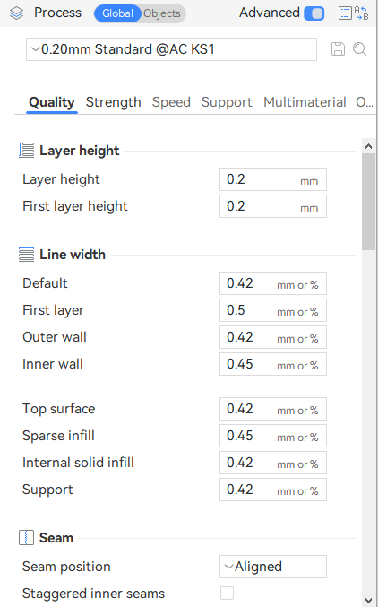
| Mon conseil | Libellé exact (EN) | Libellé FR | Valeur à mettre |
|---|---|---|---|
| Hauteur de couche | Layer height | Hauteur de couche | 0,20 mm (0,05 si haute qualité) |
| 1ʳᵉ couche pas trop fine | Initial layer height | Hauteur de couche initiale | 0,20 mm — jamais 0,08 |
🧱 Onglet « Solidité » (Strength)
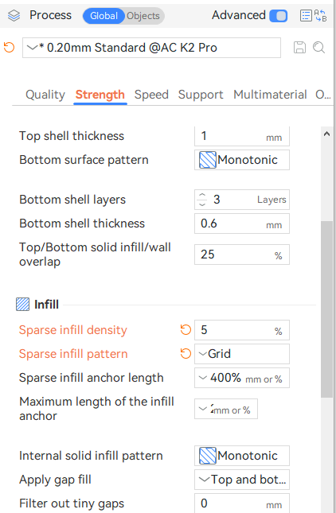
| Mon conseil | Libellé exact (EN) | Libellé FR | Valeur à mettre |
|---|---|---|---|
| Motif de remplissage | Sparse infill pattern | Motif de remplissage | Gyroid (Gyroïde) |
| Taux de remplissage | Sparse infill density | Densité de remplissage | 5–10 % déco · 15–25 % fonctionnel |
| Parois | Wall loops | Nombre de parois | 2 déco · 3 fonctionnel |
| Couches pleines | Top / Bottom shell layers | Couches sup./inf. de la coque | 3–5 selon la pièce |
🏗️ Onglet « Supports » (Support)
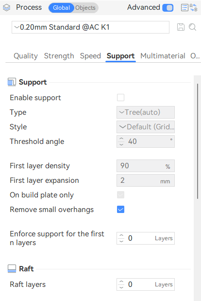
| Mon conseil | Libellé exact (EN) | Libellé FR | Valeur à mettre |
|---|---|---|---|
| Activer | Enable support | Activer le support | ☑ si surplombs/ponts |
| Supports arbre | Type | Type | Tree(auto) |
| …en version organique | Style | Style | Organic (sous Tree) |
| Angle seuil de génération | Threshold angle | Angle de seuil | 45–55° |
| Interface qui se détache (multi) | Interface filament | Filament d'interface | PETG sous de l'ABS/ASA |
| Bordure d'adhérence | Brim type / width / gap | Type / Largeur / Écart bord-objet | ABS-ASA : 5–8 mm, gap 0,0 mm |
⚠️ L'« organique » n'est pas un Type mais un Style : choisis Type = Tree(auto) PUIS Style = Organic. Le brim est dans l'onglet Supports, pas ailleurs.
🎨 Onglet « Multi-matériaux » (Multimaterial · mode Advanced)
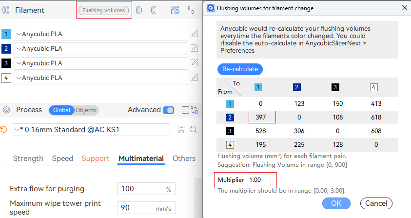
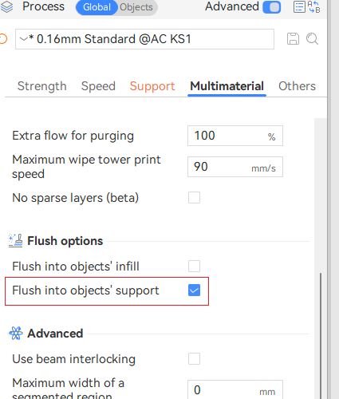
| Mon conseil | Libellé exact (EN) | Libellé FR | Valeur à mettre |
|---|---|---|---|
| Baisser la purge | Flushing volumes → champ Multiplier | Volumes de purge → Multiplicateur | 0,6–0,8 (champ accepte 0–3) |
| Purger dans le remplissage | Flush into objects' infill | Purger dans le remplissage des objets | ☑ |
| Purger dans les supports | Flush into objects' support | Purger dans les supports des objets | ☑ |
| Objet « poubelle » | Flush into this object (clic droit sur l'objet) | Purger dans cet objet | au choix |
| Tour de purge | Enable prime tower + Prime tower width | Activer la tour de purge + Largeur | ☑ · 30–40 mm |
⚠️ Les options « Flush into… » n'ont aucun effet si la tour de purge n'est pas activée. Le multiplicateur est stocké dans le fichier .3mf, pas dans le profil imprimante.
🧵 Onglet « Filament » (réglages matériau — pas dans Process)
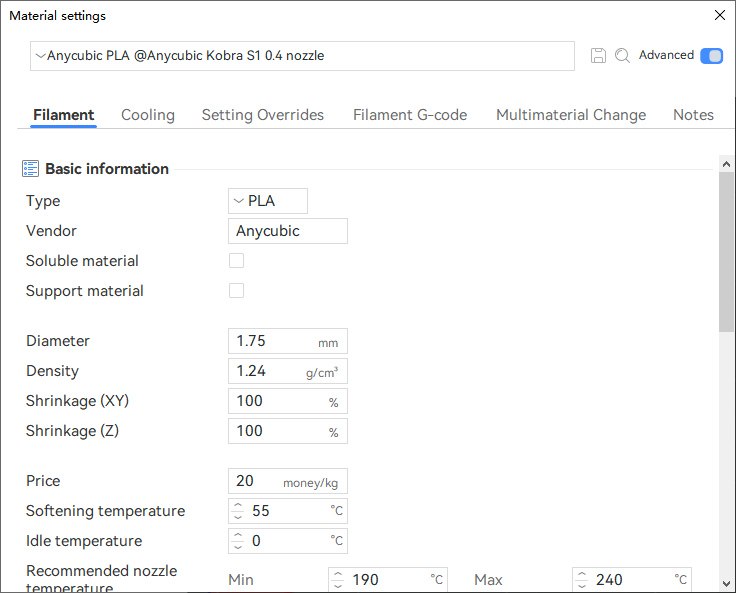
| Mon conseil | Libellé exact (EN) | Libellé FR | Où / valeur |
|---|---|---|---|
| Débit | Flow ratio | Rapport de débit | Filament (haut) · PLA ~1,00 / PETG 1,07 |
| Pressure Advance | Enable pressure advance + Pressure advance | Activer la Pressure Advance + Avance de pression | Filament › Advanced · PETG 0,08 / PLA ~0,035 |
| Vitesse volumétrique max | Max volumetric speed | Vitesse volumétrique maximale | Filament › Advanced · PLA 12 / HS 20–23, PETG HS 18–20 |
| Ventilation | Fan speed (section Cooling) | Vitesse du ventilateur (Refroidissement) | Filament › Cooling · PLA 100 / PETG 50 / ABS 0–10 / TPU 20 % |
💡 Plutôt que régler la Pressure Advance à la main, lance Flow Dynamics Calibration (menu Calibration en haut) : ça calcule et écrit la bonne valeur tout seul dans le profil filament.
Mapping vérifié sur captures d'écran récentes de l'interface (wiki Anycubic « Parameter Settings » + Reddit r/AnycubicKobraS1) et fichier de traduction officiel OrcaSlicer (OrcaSlicer_fr.po) — 2 agents de recherche + revue visuelle, Claude, 16 juin 2026. Libellés EN fiables ; les libellés FR dépendent de la langue de ta build.
🔪 Slicer & profils — valeurs concrètes
Stratégie : démarrer sur Anycubic Slicer Next (fork d'Orca, multi-couleur ACE natif, seul à parler LAN en firmware stock) → passer à OrcaSlicer pour les calibrations → Rinkhals pour l'envoi réseau direct depuis Orca.
Températures de base (plaque PEI texturée)
| Matériau | Plateau | Buse | Notes |
|---|---|---|---|
| PLA | 60 °C | 200-210 °C | Ventilation 100 % dès couche 2 · porte/capot ouverts sur les longs prints |
| PETG | 70-80 °C (75 = bon compromis) | 230-250 °C | 1ʳᵉ couche lente (~15-20 mm/s) · jamais >80 °C (pièce indécollable) · colle = protection plaque |
| TPU ≥95A | 30-40 °C | 220-230 °C | Alimentation directe arrière uniquement · ≤100 mm/s · un objet à la fois |
| ABS/ASA | 90-100 °C | 240-260 °C | Porte fermée · filtre charbon + pièce ventilée |
Vitesses réalistes (600 mm/s = marketing)
| Situation | Vitesse |
|---|---|
| PLA usage courant | 200-300 mm/s |
| Qualité prioritaire | 150-250 mm/s |
| Multi-couleur ACE Pro | 150-200 mm/s effectifs (les swaps ~2 min dominent le temps de toute façon) |
Réduire la purge multi-couleur (le réglage le plus rentable du dossier)
Leviers concrets
- Flush multiplier : 1,0 → 0,4-0,6 et tester (remonter si bleeding). Point de départ communautaire validé
- « Flush into infill / objects » : purger dans le remplissage au lieu de jeter — à activer quasi systématiquement
- Plafonner les pires paires de la matrice à ≤900 mm³ (reco Anycubic), réduire la tour de purge 35→25 mm
- Transitions clair→foncé coûtent moins que foncé→clair : ordonner les couleurs
- Préférer les modèles à changement par zone/hauteur plutôt qu'entrelacé à chaque couche
Calibration dans Orca (ordre)
- 1. Temp tower par bobine
- 2. Pressure Advance (PLA : 0,02-0,05 en point de départ)
- 3. Flow rate pass 1+2 (une fois par type de matériau)
- 4. Retraction test si stringing
- Profils communautaires de référence : MPC561 (start G-code amélioré, PETG 23 mm³/s vs 12-15 stock, rétraction 1,5 mm)
🎓 Le slicer expliqué pour de vrai
Pas une fiche technique de plus : un vrai petit cours pour comprendre chaque réglage — à quoi il sert, pourquoi il existe, et comment le choisir selon ta pièce. Si tu lis tout ça, tu sauras vraiment piloter ton slicer au lieu de recopier des chiffres au hasard. Installe-toi confortablement, c'est parti.
La hauteur de couche (Layer height)
Layer height)C'est LE réglage roi, celui qui décide de tout le reste. Imagine que ton objet est une pile de crêpes empilées les unes sur les autres : la hauteur de couche, c'est l'épaisseur de chaque crêpe. Le slicer découpe ton modèle 3D en tranches horizontales, et l'imprimante les empile une par une jusqu'à reconstituer la forme. Plus tes tranches sont fines, plus la pile est lisse et détaillée ; plus elles sont épaisses, plus ça monte vite.
Le piège, c'est que tout est un compromis. Une couche fine (genre 0,12 mm) donne des surfaces magnifiques, des courbes douces, des détails fins qui ressortent bien — mais comme il faut empiler trois fois plus de crêpes pour atteindre la même hauteur, ton impression peut durer deux à trois fois plus longtemps. À l'inverse, une couche épaisse (0,28 mm) avale la hauteur à toute vitesse et donne même une pièce plus solide dans le sens vertical (les couches plus grosses se soudent mieux entre elles), mais tu vois apparaître des marches d'escalier sur les surfaces inclinées et arrondies, comme les lignes d'un terrain vu d'avion.
Pour la Kobra S1 avec sa buse de 0,4 mm, la valeur passe-partout c'est 0,20 mm. C'est le réglage que tu garderas 80 % du temps : bon rendu, vitesse correcte, zéro prise de tête. Il existe une règle simple pour ne pas faire de bêtise : ne dépasse jamais 75 % du diamètre de ta buse. Avec une buse de 0,4 mm, ça te donne un plafond à 0,30 mm. Au-delà, le plastique fondu n'a plus assez de « place » pour bien s'écraser et coller à la couche d'en dessous, et l'adhérence entre couches devient mauvaise.
La toute première couche (Initial layer height)
Initial layer height)Celle-là, elle a droit à un réglage rien que pour elle, et c'est pas pour rien. La première couche, c'est les fondations de ta maison : si elle est ratée, tout ce qui est posé dessus part de travers ou se décolle en cours de route. Elle ne sert pas à faire joli, elle sert à accrocher. Du coup on la veut volontairement un peu plus épaisse et bien écrasée contre le plateau, pour qu'elle s'étale large et morde bien la surface.
Sur la Kobra S1, mets impérativement 0,20 mm pour cette première couche. Le problème, c'est que le profil d'usine te colle parfois une valeur ridiculement basse comme 0,08 mm. À cette épaisseur, le plastique sort en filet de cheveu, le moindre point un peu haut du plateau racle la buse à vide, et tu te retrouves avec des trous, des zones qui n'accrochent pas, et une impression qui se décolle au bout d'une heure. Une première couche trop fine, c'est la première cause de ratés inexpliqués chez les débutants.
Cette première couche travaille main dans la main avec le Z-offset (le réglage de hauteur de la buse par rapport au plateau, le fameux « la buse est-elle trop haute ou trop basse ? »). Une bonne première couche bien épaisse pardonne un Z-offset légèrement imparfait : elle a de la marge pour s'écraser correctement. Une première couche trop fine, au contraire, ne pardonne rien — au micron près, ça passe ou ça casse. C'est exactement pour ça qu'on lui donne de la matière.
La largeur d'extrusion (Line width)
Line width)Si la hauteur de couche c'est l'épaisseur de ton trait de plastique, la largeur d'extrusion c'est sa largeur. C'est la taille du « boudin » de matière que la buse dépose en avançant, vu de dessus. Et là, surprise : cette largeur peut être plus grande que le diamètre de ta buse. Avec une buse de 0,4 mm, on travaille typiquement entre 0,42 et 0,60 mm de large.
Comment c'est possible ? Quand le plastique sort de la buse, il est mou et chaud, et la buse l'écrase contre la couche du dessous comme un rouleau à pâtisserie. Du coup le trait s'étale et devient plus large que le trou d'où il sort. C'est normal et voulu. Jouer sur cette largeur a un vrai impact : un trait plus large remplit la pièce plus vite et la rend plus costaude (plus de matière déposée à chaque passage), mais il « bave » un peu sur les détails fins. Un trait plus fin rapproche les détails et affine les petites parois, mais c'est plus lent et un poil plus fragile.
La vitesse d'impression (Speed)
Speed)La grande question du débutant : « la machine annonce 600 mm/s, pourquoi je ne mets pas tout à fond ? » Parce que la vitesse, ce n'est pas un seul curseur, c'est toute une famille de réglages — et surtout parce que vitesse et qualité tirent dans des directions opposées. Plus la buse va vite, moins le plastique a le temps de bien se poser, de refroidir au bon endroit et d'accrocher proprement. Une impression réussie, c'est savoir où aller vite et où ralentir.
La règle d'or : ralentis ce qui se voit, accélère ce qui se cache. Les parois externes (la « peau » visible de ta pièce, Outer wall) doivent rester lentes pour être belles et lisses — brides-les à 150–200 mm/s même si la machine est capable de bien plus. C'est là que se joue tout l'aspect final. En revanche, les parois internes et le remplissage (Inner wall, Sparse infill), que personne ne verra jamais puisqu'ils sont à l'intérieur, peuvent foncer à 250–350 mm/s ou plus : on s'en fiche qu'ils soient parfaits, on veut juste que ça aille vite.
Et puis il y a la première couche, à part comme toujours : on la veut très lente, 15 à 25 mm/s. À cette vitesse d'escargot, le plastique a tout le temps de bien s'écraser et de souder ses fondations au plateau. C'est lent, ça dure une minute de plus, mais c'est une minute qui sauve l'impression entière.
Acceleration) qui commande ça. Sur une petite pièce pleine de détails, la buse passe son temps à accélérer/freiner et n'atteint jamais sa vitesse max. Résultat : ta vitesse moyenne réelle est souvent 2 à 3 fois plus basse que le chiffre affiché. Ne te fie donc pas au gros nombre du carton — c'est l'estimation de temps du slicer qui dit la vérité.Le nombre de parois (Wall loops)
Wall loops)Imagine ta pièce comme un fruit : le remplissage à l'intérieur, c'est la chair, mais ce qui tient vraiment le coup, c'est la peau. Les Wall loops (littéralement « les boucles de mur »), ce sont justement ces contours pleins que la buse trace à la suite, l'un collé contre l'autre, pour former la coquille extérieure de ton objet. Une paroi = un tour de buse. Avec une buse de 0,4 mm, deux parois te donnent environ 0,8 mm d'épaisseur de coque, trois te donnent ~1,2 mm. C'est ce mur-là qui encaisse les chocs, qui se tord ou pas quand tu serres la pièce dans la main.
Et voilà le truc que beaucoup de débutants ratent : pour la solidité, ajouter des parois change BIEN PLUS la donne que monter le remplissage. Une pièce avec 2 parois et 25 % de remplissage sera souvent plus molle qu'une pièce avec 4 parois et seulement 15 % de remplissage. Pourquoi ? Parce que la résistance à la flexion vient surtout de la matière située en périphérie, là où les contraintes sont les plus fortes — exactement comme une poutre en H concentre sa matière sur les bords. Le remplissage, lui, ne fait que soutenir le dessus et empêcher l'effondrement ; il ne porte presque rien en torsion.
Le compromis, parce qu'il y en a toujours un : chaque paroi supplémentaire ajoute du temps d'impression et un peu de matière, et elle « mange » de l'espace vers l'intérieur. Sur une petite pièce creuse, passer à 4 ou 5 parois peut carrément remplir les murs de plein, ce qui devient du gâchis. Pour l'étanchéité aussi les parois comptent : plus tu en as, moins il y a de risque qu'un micro-trou laisse fuir l'eau d'un vase ou d'un pot. Deux parois suffisent rarement pour du vraiment étanche ; vise 3 ou 4 si la pièce doit retenir un liquide.
L'ordre d'impression des parois (Walls printing order)
Walls printing order)Quand ta pièce a plusieurs parois, la buse doit décider laquelle elle trace en premier : celle de l'intérieur ou celle de l'extérieur. C'est tout le sens de Walls printing order, avec des options comme Inner/Outer (intérieur d'abord, puis extérieur) ou Outer/Inner (extérieur d'abord). Ça paraît anecdotique, mais ce petit choix joue sur deux choses qui comptent : la précision des dimensions et la beauté de la surface visible.
Avec Outer/Inner (la paroi extérieure imprimée en premier), le mur visible est posé sur du vide, bien net, avant que les parois intérieures ne viennent se plaquer dessus. Ça donne souvent une surface extérieure plus lisse et des détails plus francs, parce que la paroi du dehors n'est pas déformée par la pression de celles d'à côté. L'inconvénient : la paroi extérieure étant posée « dans le vide », elle peut très légèrement gonfler, ce qui nuit un poil à la précision des cotes.
Inner/Outer (intérieur d'abord), les parois internes servent de rail : quand la buse trace enfin le mur extérieur, elle s'appuie contre la matière déjà posée. Résultat = des cotes plus justes, idéal quand ta pièce doit s'emboîter dans une autre, passer dans un trou précis ou visser. Le revers, c'est une surface extérieure parfois un chouïa moins parfaite. Choisis Inner/Outer dès que la précision prime sur l'esthétique, et l'inverse pour une belle déco.Les couches du dessus et du dessous (Top shell layers / Bottom shell layers)
Top shell layers / Bottom shell layers)Les parois s'occupent des côtés, mais il faut aussi un couvercle et un fond pleins, sinon ton remplissage à 15 % laisserait des trous béants en haut et en bas. C'est le rôle des Top shell layers (les couches pleines du dessus) et des Bottom shell layers (celles du dessous). Le slicer te laisse régler soit un nombre de couches, soit directement une épaisseur via les champs …thickness — et les deux sont liés à ta hauteur de couche.
Pourquoi plusieurs couches et pas une seule ? Parce que le dessus se construit en partie au-dessus du vide du remplissage. Les premières couches « pleines » traversent en réalité par-dessus les trous de la grille interne : elles s'affaissent un peu, comme un drap tendu sur une structure ajourée. Il faut empiler 3 à 5 couches pour que tout se referme proprement et devienne lisse et solide. Si tu en mets trop peu, tu obtiens du pillowing : des petits creux et des trous sur le dessus, comme un coussin mal rembourré qui laisse voir les bosses du remplissage en dessous.
En pratique, 4 à 5 couches pour le dessus et 3 à 4 pour le dessous font le job sur la plupart des pièces. Le dessous peut se permettre un peu moins, car il s'imprime à plat sur le plateau, bien soutenu dès le départ — pas de vide à enjamber. Le dessus, lui, est le plus exposé au pillowing, donc c'est là qu'il ne faut pas être radin.
La couture (Seam position)
Seam position)Regarde de près un objet imprimé : tu verras souvent une fine ligne verticale qui court du bas vers le haut, comme une petite cicatrice. C'est la couture, gérée par Seam position. Elle existe parce que chaque couche est une boucle fermée : la buse doit bien commencer et finir son tour quelque part, et à cet endroit elle laisse un minuscule point de raccord, un léger surplus ou creux de matière. Empile ces points couche après couche et tu obtiens cette ligne visible.
Tu ne peux pas la supprimer, mais tu peux décider où la cacher ou comment la diluer. Aligned empile toutes les coutures sur une même verticale : moche si c'est en plein milieu de la face avant, mais nickel si tu places cette ligne dans un angle ou une arête de la pièce, où l'œil ne la voit plus. Back force la couture à l'arrière de l'objet : parfait pour une figurine ou un buste qu'on regarde toujours de face. Nearest laisse le slicer la poser au point le plus proche pour gagner du temps, sans souci esthétique — pratique pour du fonctionnel.
Random éparpille la couture au hasard à chaque couche : au lieu d'une cicatrice nette, tu obtiens une texture diffuse, comme un grain léger réparti sur toute la surface. C'est top pour les formes organiques et cylindriques (vases, colonnes) où une ligne droite jurerait. Le revers : la surface entière est très légèrement moins lisse, et tu peux voir de petits points isolés ici et là.Le bon réflexe, donc : pour une pièce déco qu'on regarde sous un angle précis, mets Back ou Aligned et oriente le modèle pour que la couture tombe dans un coin discret. Pour une forme ronde où aucune face n'est « la bonne », Random dilue le problème. Et pour du purement fonctionnel où l'esthétique n'a aucune importance, laisse Nearest et gagne un peu de temps d'impression.
À quoi sert le remplissage, et ce fameux pourcentage (Sparse infill density)
Sparse infill density)Imagine que tu coupes ta pièce imprimée en deux avec une scie. Surprise : à l'intérieur, ce n'est pas plein ! Tu vas trouver une sorte de structure ajourée, un treillis qui ressemble parfois à un nid d'abeille, parfois à des vaguelettes. Ça, c'est le remplissage — l'infill en anglais. Et c'est l'imprimante qui le génère toute seule entre les parois extérieures de ton objet.
Pourquoi ne pas tout remplir, tant qu'à faire ? Parce que ce serait du gâchis pur. Une pièce 100 % pleine, ça mange des heures de print en plus, ça vide ta bobine, ça chauffe énormément le plastique au cœur (qui se rétracte mal et peut déformer ta pièce), et surtout… ça ne sert quasiment à rien. Le plastique du milieu ne travaille presque pas. Du coup, l'idée géniale de l'impression 3D, c'est de mettre juste ce qu'il faut de matière à l'intérieur pour tenir le coup, et de laisser du vide partout ailleurs. Comme le carton ondulé : ce n'est pas un bloc plein, c'est deux feuilles avec des vagues entre les deux, et pourtant ça porte un déménagement entier.
Le pourcentage de remplissage, c'est précisément le réglage qui dit « remplis l'intérieur à X % de matière ». Dans Anycubic Slicer Next, ça s'appelle Sparse infill density (littéralement « densité du remplissage clairsemé »). À 10 %, l'intérieur est très aéré, plein de vide. À 50 %, c'est déjà bien dense et lourd. À 100 %, c'est plein. C'est un curseur de compromis entre quatre choses : la solidité, le poids, le temps d'impression et la matière consommée. Tu montes le pourcentage, tu gagnes en robustesse mais tu paies en temps et en bobine. Tu descends, c'est l'inverse.
Du coup, voici les repères maison à garder en tête selon l'usage de ta pièce. Pour un objet purement décoratif (figurine, vase, déco posée sur une étagère qui ne subit aucun effort), vise 5 à 10 % : c'est largement suffisant pour soutenir le dessus, et tu économises un temps fou. Pour une pièce fonctionnelle qui va prendre des contraintes (support, fixation, boîtier, pièce mécanique, truc qu'on manipule), monte à 15 à 25 % : c'est la zone d'or, le meilleur rapport solidité/temps. Et pour le flexible (TPU), reste vers 10 % : trop de matière souple à l'intérieur et ta pièce devient un caillou tout dur au lieu de garder son côté élastique.
Les motifs de remplissage, passés en revue un par un (Sparse infill pattern)
Sparse infill pattern)Le pourcentage dit combien de matière, mais le motif dit comment elle est dessinée à l'intérieur. C'est le réglage Sparse infill pattern (« motif du remplissage clairsemé »). Et là, le choix change tout : la solidité, la vitesse, le bruit de l'imprimante, même la sensation au toucher pour une pièce souple. Petit tour du propriétaire, parce que chaque motif a sa personnalité et son terrain de jeu.
Grid (la grille) — C'est le motif par défaut, le couteau suisse. Imagine un quadrillage de cahier d'écolier, mais en 3D : des lignes qui se croisent à angle droit, couche après couche. C'est rapide à imprimer, simple, et ça tient correctement dans la plupart des cas. Si tu débutes et que tu ne veux pas te prendre la tête, reste sur Grid : tu seras bien dans 90 % des situations. Son seul petit défaut, c'est qu'aux endroits où les lignes d'une couche croisent celles de la couche d'en dessous, la buse repasse sur un point déjà déposé et peut faire un léger « toc ». Pas dramatique, mais ça existe.
Gyroid — Ah, mon chouchou. Le Gyroid, c'est une structure ondulée en 3D, comme des vagues qui partent dans toutes les directions à la fois. Le génie de ce motif, c'est qu'il est solide de façon égale dans tous les sens — tu peux pousser ta pièce de n'importe quel côté, elle résiste pareil (les ingénieurs appellent ça « isotrope »). Autre avantage énorme : ses lignes ne se croisent jamais entre elles. Du coup la buse glisse en continu sans jamais cogner un point déjà posé, ce qui veut dire que tu peux imprimer ton remplissage vite et sans vibrations bizarres. Il est juste un chouïa plus lent à calculer et à tracer que la grille, mais le jeu en vaut la chandelle. C'est le motif idéal pour les pièces fonctionnelles sérieuses et pour le flexible, où sa souplesse et son équilibre font des merveilles.
Honeycomb (le nid d'abeille) — Le vrai nid d'abeille, des hexagones bien dessinés, exactement comme dans une ruche. La nature n'a pas choisi cette forme par hasard : c'est l'une des structures les plus solides qui existent pour le moins de matière. Le Honeycomb est très robuste et, bonus, il est magnifique si on voit l'intérieur (pièces translucides, objets ajourés). Le revers de la médaille : il est nettement plus lent à imprimer, parce que la buse doit constamment changer de direction pour tracer tous ces angles. À sortir quand tu veux du costaud ou du joli, mais pas quand tu es pressé.
Cubic et Adaptive Cubic — Le Cubic, ce sont des petits cubes empilés et posés sur la pointe, qui créent des triangles dans toutes les couches. L'avantage : il répartit la solidité sur les trois axes (gauche-droite, avant-arrière, et la hauteur), tout en restant économe en matière. C'est un excellent compromis polyvalent, un cran au-dessus de la grille en robustesse multi-directions. Sa variante Adaptive Cubic est encore plus maligne : elle met de la matière dense près des parois et du dessus (là où c'est utile) et aère le centre de la pièce (là où ça ne sert à rien). Tu gagnes du temps et de la bobine sans rien perdre où ça compte. Parfait pour les grosses pièces.
Lightning (l'éclair) — Celui-là est radical et il faut bien comprendre sa logique. Le Lightning ne remplit PAS la pièce : il génère juste une espèce d'arborescence, comme des branches d'éclair ou des racines, dont le seul boulot est de venir soutenir le plafond de ta pièce (les couches du dessus, qui sinon s'effondreraient dans le vide). En dehors de ça, l'intérieur est quasiment creux. Résultat : c'est ultra rapide et ça consomme une misère de plastique. Le piège, c'est qu'une pièce en Lightning n'a quasiment aucune solidité : appuie sur les côtés et ça s'écrase. C'est parfait pour la déco (une figurine que personne ne va serrer), mais à bannir absolument pour tout ce qui doit résister.
Lightning pour une pièce mécanique, un support, un crochet, un boîtier qu'on visse ou n'importe quoi qui subit une force. Elle sera creuse à l'intérieur et cédera au premier appui. Lightning = déco uniquement. Pour du solide, Gyroid, Cubic ou Honeycomb.Concentric — Ce motif suit le contour de ta pièce, comme les cercles concentriques qui s'élargissent quand tu jettes un caillou dans l'eau : chaque ligne épouse la forme extérieure, de plus en plus petite vers le centre. Son intérêt principal n'est pas la solidité rigide, mais l'élasticité : comme il ne crée pas de croisements rigides à l'intérieur, il laisse la pièce se déformer et revenir. C'est LE motif pour le TPU (souple) : ta pièce garde son côté caoutchouc, elle plie et rebondit au lieu de se bloquer. On l'utilise aussi pour les objets ajourés où on veut un joli rendu de l'intérieur.
Triangles et Line (ou Rectilinear) — Deux alternatives plus simples, vite expliquées. Triangles, ce sont des lignes croisées à 60° qui forment un maillage de triangles — c'est stable et plutôt résistant au cisaillement, une bonne alternative à la grille. Line (parfois appelé Rectilinear), ce sont de simples lignes parallèles, une couche dans un sens, la suivante perpendiculaire. C'est le motif le plus basique et le plus rapide qui soit, mais aussi le moins solide — pratique quand la robustesse n'a vraiment aucune importance et que tu veux juste que ça aille vite.
• Déco / rapide / pas d'effort →
Lightning (ou Grid à 5-10 %).• Polyvalent, je débute, je veux pas réfléchir →
Grid à 15 %.• Solide et fonctionnel →
Gyroid à 20 % (le meilleur tout-terrain), ou Cubic pour les grosses pièces.• Maximum costaud / beau dedans →
Honeycomb.• Souple (TPU) →
Concentric ou Gyroid à 10 %, jamais plus.En cas de doute total :
Gyroid à 20 %, tu te trompes rarement.Les petits réglages malins du remplissage
Une fois le motif et le pourcentage choisis, il reste un ou deux réglages discrets qui font la différence entre une pièce qui tient et une pièce dont l'intérieur se décolle des murs. Le plus important s'appelle Infill/wall overlap (« recouvrement remplissage / parois »). En clair : de combien le remplissage vient mordre sur les parois pour s'y accrocher.
Pourquoi c'est crucial ? Parce que ton remplissage et tes murs sont imprimés séparément. Si le treillis intérieur s'arrête pile au bord sans toucher la paroi, les deux ne sont pas vraiment soudés : ta pièce peut sonner creux, et sous contrainte l'infill se détache des murs comme une garniture qui se décolle d'un gâteau. Le Infill/wall overlap force le remplissage à empiéter légèrement (un petit pourcentage de la largeur de ligne) sur les parois, ce qui les colle ensemble et donne une pièce d'un seul bloc, bien plus solide. Le réglage par défaut d'Anycubic Slicer Next est très bien pour démarrer ; n'y touche que si tu vois des problèmes de séparation, et alors monte-le doucement.
La température de la buse (Nozzle temperature) : le cœur de la fonte
Nozzle temperature) : le cœur de la fonteLa buse, c'est le petit canon chauffé par lequel ton filament ressort, fondu, pour être déposé couche après couche. Le réglage Nozzle temperature (en °C) décide à quel point ce plastique devient liquide au moment où il sort. Et là, c'est une histoire de juste milieu : ni trop froid, ni trop chaud. Imagine du miel. Sorti du frigo, il est dur et ne coule pas ; trop chauffé, il devient une eau qui dégouline partout. Le filament, c'est pareil.
Si tu imprimes trop froid, le plastique ne fond pas complètement : la buse force, l'extrudeur patine, tu obtiens de la sous-extrusion (des trous, des couches maigres), des couches qui ne collent pas entre elles (ta pièce se déchire à la main), et au pire un bouchage de la buse. Si tu imprimes trop chaud, le plastique devient trop liquide : il bave entre deux points (le fameux filant, ou « stringing », ces fils d'araignée), les détails fins s'affaissent, et tu peux avoir des blobs (des paquets de matière qui se forment et restent collés). Le bon réglage, c'est celui où la matière sort proprement, nette, sans forcer ni dégouliner.
Pourquoi chaque matière a SA plage ? Parce que chaque plastique fond à une température différente. Le PLA est doux et fond bas (200–215 °C). Le PETG demande plus chaud (240–250 °C) parce que sa chimie est plus costaude. L'ABS et l'ASA montent encore (250–260 °C). Le TPU, ce caoutchouc souple, tourne autour de 210–230 °C. Ta Kobra S1 peut chauffer la buse jusqu'à 320 °C, donc tu as de la marge même pour des matières exotiques.
La température du plateau (Bed temperature) : coller la première couche
Bed temperature) : coller la première coucheLe plateau, c'est la surface chauffante sur laquelle ta pièce se construit. Le réglage Bed temperature sert à une chose essentielle : faire adhérer la première couche. Un plastique chaud qui touche un plateau tiède reste mou un instant de plus, le temps de bien s'écraser et de s'accrocher. Si le plateau est froid, la première couche fige instantanément, se rétracte, et ta pièce se décolle — souvent dès les premières minutes, et tu retrouves un plat de spaghettis.
Mais le plateau chaud combat surtout un ennemi sournois : le warping (le gauchissement). Quand le plastique refroidit, il se contracte légèrement. Les coins, qui refroidissent en premier, se contractent les premiers et se relèvent, décollant la pièce du plateau et déformant la base. En gardant le bas de la pièce au chaud via le plateau, tu ralentis ce refroidissement et tu limites la traction qui fait friser les coins. C'est pour ça aussi que la première couche est souvent réglée plus chaude que les suivantes (par exemple PETG à 80 °C pour la 1re couche, puis 75 °C) : on met le paquet sur l'accroche au démarrage, puis on relâche un peu.
Les valeurs de référence : PLA 55–60 °C, PETG 80 °C → 75 °C, ABS/ASA 110 °C, TPU 50 °C. Ton plateau monte jusqu'à 120 °C, largement assez. Tu remarques que l'ABS et l'ASA réclament énormément (110 °C) : c'est parce que ce sont des plastiques qui se contractent BEAUCOUP en refroidissant, donc très sujets au warping. Un plateau bien chaud ne suffit même pas tout seul pour eux.
Le refroidissement et la ventilation (Cooling, Fan speed) : figer au bon moment
Cooling, Fan speed) : figer au bon momentVoici le pendant exact de la buse. La buse fait fondre ; le ventilateur de pièce, lui, refige le plastique juste après l'avoir posé. Le réglage Fan speed (vitesse du ventilo, en %) contrôle ce souffle. L'idée : dès qu'un filet de plastique est déposé, on veut souvent qu'il durcisse vite pour qu'il garde sa forme et que la couche suivante se pose sur du solide plutôt que sur de la guimauve molle.
Pour le PLA, ventilo à fond (100 %). Le PLA adore le refroidissement : c'est ce qui te donne des détails nets, des angles propres, et surtout de beaux ponts (« bridges », ces portions imprimées dans le vide d'un point à un autre) qui ne pendouillent pas. Plus tu refroidis vite, plus le PLA est beau. Pour le PETG, on calme le jeu (~50 %). Le PETG, si tu le refroidis trop fort, fige avant d'avoir eu le temps de bien souder à la couche d'en dessous : résultat, des couches qui collent mal et une pièce fragile qui se délamine. Un peu de ventilo pour les détails, pas trop pour garder la solidité.
Pour l'ABS et l'ASA, ventilo quasi coupé (0–10 %). Là c'est radical : ces plastiques détestent le refroidissement brutal. Un coup de ventilo et la couche se contracte d'un coup, ça crée des fissures entre les couches et ça aggrave le décollement du plateau. On les laisse refroidir tout doucement dans la chaleur de l'enceinte. Le TPU, lui, se contente d'un refroidissement léger et surtout d'une impression lente.
Le séchage des filaments (et l'ACE Pro) : l'ennemi invisible, l'humidité
Voilà un truc que personne ne soupçonne en débutant, et qui ruine pourtant des impressions entières : l'humidité. Le plastique en bobine est hygroscopique — un grand mot qui veut juste dire qu'il boit l'eau présente dans l'air, comme une éponge. Le PETG et le TPU sont particulièrement gourmands : laissés à l'air libre quelques jours dans une pièce humide, ils se gorgent d'eau sans que tu voies rien.
Le problème arrive dans la buse. Cette eau emprisonnée dans le filament, chauffée à 240 °C, se transforme instantanément en vapeur et explose en micro-bulles. Concrètement, tu entends un petit « ploc ploc » ou des crépitements pendant l'impression, tu vois de la vapeur, et le résultat est moche : surface rugueuse et terne, stringing massif (des fils partout), trous, sous-extrusion erratique. Tu peux avoir réglé ta buse et ton ventilo à la perfection : avec un filament humide, ça sera raté quand même. C'est souvent LA cause cachée d'une bobine qui « imprimait bien avant et imprime mal maintenant ».
Et c'est là que ton combo brille. L'ACE Pro (le boîtier multicouleur de la Kobra S1) intègre un sécheur qui chauffe les bobines à 55 °C en continu, pendant le stockage ET pendant l'impression. Tes bobines restent au sec en permanence, sans manip de ta part — c'est un vrai atout du Combo que beaucoup de machines n'ont pas. (Sur l'ACE 2 Pro, le séchage monte à 65 °C.) Tu charges ta bobine, et le boîtier s'occupe de la garder buvable.
La rétraction (Retraction length) et le fil qui bave (stringing)
Retraction length) et le fil qui bave (stringing)Imagine que ta buse, c'est un stylo à encre chaude. Quand tu écris, l'encre coule pile où il faut. Mais quand tu lèves le stylo pour aller écrire un mot plus loin, qu'est-ce qui se passe ? L'encre continue de baver et tu traînes un trait dégueulasse sur ta feuille. En impression 3D, ce trait, c'est le stringing : ces petits fils, ces toiles d'araignée qui relient deux parties de ta pièce après un déplacement à vide.
Pour éviter ça, l'imprimante a un réflexe malin : juste avant de faire un déplacement à vide (un trajet où elle n'imprime rien, elle se contente de se repositionner ailleurs), elle aspire un peu de filament en arrière. C'est exactement ça, la rétraction. Le Retraction length, c'est la longueur de fil qu'elle ravale. En reculant le plastique fondu dans la buse, on coupe la pression : plus rien ne goutte pendant le voyage. Sur la Kobra S1, qui est une imprimante à extrudeur direct (le moteur qui pousse le fil est juste au-dessus de la buse, pas à l'autre bout d'un tube), tu as besoin de peu de rétraction : on parle de 0,8 à 1,2 mm pour le PLA et l'ABS. C'est court, et c'est normal — sur une imprimante Bowden (avec un long tube), il en faudrait 4 ou 5 fois plus.
Deux réglages comptent : la longueur (combien de fil on aspire) et la vitesse (à quelle vitesse on l'aspire, le Retraction speed). Trop peu de longueur, ça bave encore. Trop, et tu crées un manque de matière au redémarrage, voire un bouchon. La vitesse, elle, doit être franche : un retrait rapide coupe net le filet, comme quand tu retires vite une cuillère de miel au lieu de la laisser couler.
Et la matière joue énormément. Le PETG file beaucoup plus que le PLA — c'est un plastique plus visqueux, plus collant, qui adore faire des toiles. Pour lui, on monte la rétraction autour de 1,8 mm. Le TPU (le flexible), c'est encore une autre histoire : mou comme un chewing-gum, il absorbe la rétraction au lieu de la transmettre, donc on monte à 1,5–2,0 mm mais on imprime surtout très lentement.
Dernier ingrédient, le Z hop : quand cette option est active, la buse monte légèrement (de quelques dixièmes de millimètre) avant chaque déplacement à vide, histoire de survoler la pièce au lieu de la raboter. Pratique sur les pièces fragiles ou hérissées de petits piquots qu'un coup de buse pourrait arracher. Le revers, c'est que ça peut très légèrement aggraver le stringing (la buse a plus de temps pour baver en l'air) — active-le si tu vois ta buse accrocher la pièce, mais ne le mets pas partout par réflexe.
Les supports : quand et lesquels (Enable support, Type, Style)
Enable support, Type, Style)Une imprimante 3D empile des couches de plastique les unes sur les autres, du bas vers le haut. Le problème, c'est qu'elle ne sait pas imprimer dans le vide : si une couche n'a rien en dessous pour la porter, le plastique fondu tombe et fait des spaghettis. Pour les parties de ta pièce qui « avancent dans le vide » (un bras tendu, un toit en surplomb, le menton d'une figurine), il faut donc construire des échafaudages sacrificiels : les supports. On les imprime exprès pour soutenir, puis on les casse à la fin. Tu les actives avec Enable support.
La grande question : à partir de quand en a-t-on besoin ? La règle d'or, c'est les 45°. Tant qu'une paroi penche de moins de 45° par rapport à la verticale, chaque nouvelle couche repose suffisamment sur la précédente, ça tient tout seul (on dit que c'est « auto-portant »). Au-delà, ça déborde dans le vide et il faut soutenir. Le réglage Threshold angle (angle seuil) fixe précisément ce déclencheur. Le mettre entre 45 et 55° est un bon compromis : plus tu montes vers 55°, moins tu génères de supports (tu fais confiance à la machine pour gérer les surplombs un peu raides), mais tu prends le risque qu'un surplomb baveux passe.
Maintenant, quel type de support ? Tu as deux familles dans Type :
Les supports normaux (en grille / colonnes verticales) : très solides, ils montent tout droit comme des poteaux. Mais ils ont deux défauts — ils marquent la surface là où ils touchent la pièce (ça laisse une zone rugueuse), et ils sont parfois galère à retirer car ils s'accrochent partout. Et puis ils consomment beaucoup de plastique.
Les supports arbre / organiques (Tree(auto) pour le type, combiné au style Organic) : eux, ils poussent comme les branches d'un arbre. Le tronc monte depuis le plateau, puis des branches partent en biais pour aller toucher la pièce juste aux endroits qui en ont besoin, par de petits points de contact. Résultat : ils touchent beaucoup moins la pièce (donc moins de marques), ils se retirent bien mieux (souvent d'un seul bloc, à la main), et ils utilisent moins de matière. Pour 90 % des pièces — surtout les figurines et les formes organiques — c'est le choix par défaut que je te conseille.
Interface filament (le filament d'interface, cette fine couche pile entre le support et ta pièce). Si tu imprimes en ABS ou ASA et que tu charges du PETG comme filament d'interface, magie : le PETG et l'ABS ne collent quasiment pas l'un à l'autre. Les supports se détachent alors tout seuls, en laissant une surface nickel en dessous. C'est exactement le genre de combine que l'ACE Pro multi-bobines rend facile, puisque tu peux charger les deux matières en même temps.Accrocher la pièce au plateau : skirt, brim, raft (Brim, Skirt, Raft)
Brim, Skirt, Raft)Une impression qui se décolle du plateau en cours de route, c'est la cata : la pièce gondole, se soulève par les coins (le fameux warping), et finit par bouger et tout rater. Pour ça, le slicer te propose trois aides à la base de ta pièce. Elles ne servent pas du tout à la même chose, alors voyons-les une par une.
Le Skirt (la « jupe ») : c'est un ou deux tours de plastique autour de ta pièce, sans la toucher. Son boulot n'est pas de coller — c'est juste un tour de chauffe pour la buse. Avant d'imprimer pour de vrai, la buse amorce le flux, purge le petit bout de fil refroidi, stabilise le débit. Quand l'impression « réelle » commence, tout coule bien. Ça ne protège pas du décollement, mais c'est sain de le laisser actif par défaut.
Le Brim (la « collerette ») : là, on attaque le décollement. C'est un large rebord plat collé tout autour de la base de ta pièce, comme le bord d'un chapeau. Il augmente la surface en contact avec le plateau, donc l'adhérence, et il maintient les coins plaqués pendant que ça refroidit. C'est le remède n°1 contre le warping, et c'est quasi indispensable pour l'ABS et l'ASA, qui se rétractent fort en refroidissant et adorent retrousser leurs coins. Compte 5 à 8 mm de large pour ces matières. Point crucial : règle le gap (l'écart) à 0 mm pour que le brim soit bien soudé à la pièce — il fait son office et se détache ensuite proprement au cutter.
Le Raft (le « radeau ») : l'option lourde. C'est une plaque complète imprimée sous toute la pièce, qui flotte entre elle et le plateau. Ta pièce s'imprime par-dessus ce radeau, pas directement sur le verre. C'est costaud mais ça consomme de la matière, ça rallonge l'impression, et le dessous de ta pièce sera moins lisse. On le réserve donc à un cas précis : les pièces qui ont une toute petite surface de contact avec le plateau (des pieds fins, une figurine en équilibre sur un orteil) où ni le skirt ni le brim ne suffisent à tenir.
Le Z-offset (la première couche parfaite)
Si je devais te donner un seul réglage à maîtriser, ce serait celui-là. Le Z-offset, c'est la toute petite distance entre la buse et le plateau au moment où la première couche s'écrase. Et cette première couche décide de TOUT : si elle accroche bien, le reste suit ; si elle rate, ton impression est morte avant d'avoir commencé. C'est les fondations de la maison.
Le principe est simple à visualiser. Si la buse est trop haute, le plastique sort « en l'air » et n'est pas plaqué contre le plateau : il n'accroche pas, les premiers traits sont des boudins ronds qui ne collent pas entre eux, et au mieux ta pièce se décolle, au pire tu obtiens un nid de spaghettis. Si la buse est trop basse, elle écrase le plastique contre le verre au point qu'il ne peut plus sortir : ça gratte, ça laisse des traces, et la buse finit par se boucher faute de place pour extruder.
Le bon réglage est entre les deux : la première couche doit être légèrement écrasée, des traits bien plats, larges, soudés à leurs voisins, sans bourrelet ni trou. On ajuste ça finement, par pas de 0,02 mm environ. Un cran négatif (−0,02) rapproche la buse du plateau ; un cran positif l'éloigne. Sur la Kobra S1, tu peux corriger ce réglage en direct pendant l'impression de la première couche via l'écran de la machine, ce qui est idéal pour le régler à l'œil.
Comment marche le multicouleur (et pourquoi ça gâche autant)
Avant de toucher au moindre réglage, il faut piger un truc fondamental : ta Kobra S1, même avec l'ACE Pro et ses 4 bobines, n'a qu'une seule buse. Une seule. Les 4 filaments ne sortent pas chacun par leur petit trou comme on pourrait l'imaginer : l'ACE Pro est juste un « chargeur » qui pousse le bon filament dans le tube, et tout passe par la même buse unique. C'est exactement comme un robinet par lequel tu ferais couler du sirop rouge, puis du sirop blanc, puis du bleu… tout par le même bec.
Et là tu vois tout de suite le problème. Quand tu passes du rouge au blanc, il reste du rouge dans la buse et le tube. Si tu imprimes direct, ton blanc va sortir rose pendant un moment, le temps que l'ancienne couleur soit chassée. Pour éviter ça, l'imprimante fait ce qu'on appelle une purge (ou « rinçage », ou « flush ») : à chaque changement de couleur, elle pousse plusieurs centimètres de filament neuf dans le vide pour nettoyer la buse, jusqu'à ce que ce qui sort soit bien d'une seule couleur. Ce filament de nettoyage, lui, ne sert à rien sur ta pièce. Il part à la poubelle.
Multiplie ça par le nombre de changements de couleur dans ta pièce. Un logo bicolore tout simple ? Quelques purges, peu de perte. Mais une figurine bien bariolée qui alterne 4 couleurs à chaque couche ? La machine peut changer de couleur des centaines de fois, et tu te retrouves avec plus de plastique dans la poubelle que dans ta pièce. On parle couramment de 150, 200, jusqu'à 350 % de déchets sur une pièce très chargée. Autrement dit, pour 30 g de modèle, tu peux cramer 100 g de bobine. C'est LE sujet n°1 du multicouleur, et tout ce qui suit ne sert qu'à reprendre le contrôle là-dessus.
Réduire le gâchis : les volumes de purge et le multiplicateur (Flushing volumes, Multiplier)
Flushing volumes, Multiplier)Le slicer ne purge pas une quantité fixe bêtement. Il a une vraie matrice sous le capot, dans Flushing volumes : un tableau qui dit « pour passer de la couleur A vers la couleur B, purge X mm³ ». Et ce X change selon le couple de couleurs, parce que toutes les transitions ne se valent pas.
La règle est simple à retenir : passer du foncé au clair coûte cher, passer du clair au foncé coûte peu. Pourquoi ? Parce qu'une trace de noir qui bave dans du blanc, ça se voit immédiatement, c'est moche, il faut purger longtemps pour la faire disparaître. Alors qu'un reste de blanc dans du noir, on ne le verra jamais : deux ou trois traces et c'est noyé. Dans la matrice, tu verras donc des valeurs élevées dans les cases « foncé → clair » et des valeurs basses dans les cases « clair → foncé ». C'est logique et tu peux même ajuster une case précise à la main si une transition particulière te pose problème.
Au-dessus de cette matrice, il y a le réglage qui va te sauver des bobines entières : le champ Multiplier. C'est un curseur global (de 0 à 3) qui multiplie toutes les valeurs de la matrice d'un coup. Par défaut Anycubic le met assez haut pour être tranquille (genre 1,0 et plus), ce qui garantit des couleurs nickel… mais gaspille énormément. La plupart du temps, la machine purge bien plus que nécessaire « au cas où ».
Multiplier à 0,6–0,8. Tu réduis instantanément la purge de 20 à 40 % sur toute la pièce, sans toucher à la matrice case par case. Procède par étapes : descends à 0,8, lance une petite pièce test bicolore, et regarde s'il reste des bavures de l'ancienne couleur sur les premières couches après changement. Si c'est net, tente 0,7 puis 0,6. Dès que tu vois une couleur « fantôme » qui traîne, tu es descendu trop bas : remonte d'un cran. Tu cales ainsi le minimum vital pour TES filaments.Multiplier à 0,3 « pour économiser un max » sans tester. Une purge insuffisante, c'est des couleurs sales sur toute l'impression — du rose à la place du blanc, des traînées —, et là tu jettes la pièce ENTIÈRE, pas juste un peu de purge. Tu auras gaspillé infiniment plus que si tu avais purgé correctement. L'économie se fait par petits pas vérifiés, jamais d'un coup à l'aveugle.Purger malin : dans la pièce ou dans une tour (Flush into objects' infill, Prime tower)
Flush into objects' infill, Prime tower)Réduire la purge, c'est bien. Mais il y a encore mieux : ne plus la jeter du tout. Réfléchis-y deux secondes — ce filament de nettoyage, c'est du plastique fondu parfaitement utilisable. Le seul problème, c'est sa couleur incertaine pendant la transition. Alors pourquoi ne pas le mettre là où la couleur n'a aucune importance ?
C'est exactement ce que font deux options en or. Flush into objects' infill dit au slicer : « au lieu de cracher la purge dans le vide, injecte-la dans le remplissage de la pièce ». Le remplissage, c'est l'intérieur de l'objet, ces nids d'abeille qu'on ne voit jamais une fois la pièce fermée. Peu importe qu'il soit rouge, vert ou marbré : il est planqué à l'intérieur. Tu récupères donc de la purge gratuitement, elle devient de la matière utile. Son cousin Flush into support fait pareil mais dans les supports (que tu jetteras de toute façon) — pratique quand ta pièce en a beaucoup.
Et quand il reste de la purge à évacuer malgré tout, il y a la fameuse Prime tower : une petite tour qui se construit à côté de ta pièce, couche après couche, et dans laquelle la machine vient « s'essuyer » à chaque changement. Son rôle n'est pas que poubelle : à chaque transition, elle réamorce et stabilise la pression dans la buse, pour que le tout premier trait de la nouvelle couleur sur ta vraie pièce soit déjà propre et bien dosé. Vise une tour de 30–40 mm de base : assez large pour être stable et ne pas se décrocher en cours de route, sans devenir un gouffre à filament.
Flush into infill + Multiplier à 0,7, et tu passes de « 300 % de déchets » à quelque chose de presque raisonnable.La calibration : le quart d'heure qui change tout
On passe au deuxième gros morceau, et celui-là, beaucoup de gens le zappent par flemme — puis se demandent pourquoi leurs impressions ne sont « pas tout à fait ça ». La calibration, c'est le quart d'heure d'investissement qui transforme une imprimante correcte en imprimante qui sort des pièces nettes. La raison est bête comme chou : aucun filament n'est identique. Un PLA blanc d'une marque, un PLA noir d'une autre, ou même deux bobines du même rouleau achetées à six mois d'écart, ne fondent pas exactement pareil, ne coulent pas pareil. Calibrer, c'est dire à la machine « voilà précisément comment CE filament se comporte ». Et bonne nouvelle : Anycubic Slicer Next a un menu Calibration qui déroule ces tests presque tout seul, tu n'as qu'à lire le résultat.
Le réglage le plus important, c'est le débit, le Flow ratio. C'est la quantité de matière que la machine pousse. Trop de débit, et elle dépose trop de plastique : tu obtiens une surface bombée, granuleuse, des petits paquets (« blobs ») et des angles qui débordent. Pas assez, et il manque de la matière : des trous entre les lignes, des couches qui ne se collent pas, une pièce fragile et translucide par endroits. Le bon réglage te donne un dessus parfaitement lisse. Comme point de départ : PLA autour de 1,00, PETG vers 1,07 (le PETG coule plus, il en faut un poil plus).
Ensuite vient un réglage plus subtil mais qui fait toute la différence sur la netteté : le Pressure advance, qu'on calibre via Flow Dynamics Calibration. Le souci qu'il corrige : dans la buse, le plastique fondu est sous pression, et cette pression a de l'inertie. Quand la tête ralentit pour prendre un angle, la pression met un instant à retomber, donc la buse continue de baver une fraction de seconde — résultat, un petit renflement à chaque coin. Le Pressure advance anticipe ça : il relâche la pression juste avant que la tête ralentisse, pour que les coins soient francs et nets, sans bourrelet. Le test Flow Dynamics Calibration trouve la bonne valeur tout seul et la range au bon endroit. Ordres de grandeur : PLA ~0,035, PETG ~0,08 (le PETG, plus visqueux, a plus d'inertie, donc une valeur plus haute).
Le troisième pilier, c'est le Max volumetric speed, et c'est sans doute le plus mal compris. Ce n'est PAS une vitesse de déplacement en mm/s : c'est le vrai plafond physique de ta machine, exprimé en mm³ par seconde — combien de millimètres cubes de plastique ta buse est capable de faire fondre chaque seconde. Pense à un goulot d'étranglement : tu peux demander à la tête d'aller vite, mais si la buse n'arrive pas à fondre assez de matière pour suivre, elle « patine » et tu obtiens des lignes maigres et sous-extrudées. Régler ce plafond correctement, c'est garantir que la matière suit, même à grande vitesse. Repères : PLA classique 12 mm³/s, PLA Haute Vitesse 20–23, PETG Haute Vitesse 18–20. C'est CE chiffre qui détermine ta vitesse réelle utile, pas le curseur de vitesse.
À côté de ces trois-là, la Temp tower (tour de température) imprime un même objet à plusieurs températures empilées et te laisse choisir à l'œil l'étage le plus beau (adhérence des couches, pas de filaments parasites) — ça te donne la température idéale de TON filament, là encore propre à chaque bobine.
LeviQ (le nivellement automatique du plateau : elle palpe la surface pour mémoriser ses creux et ses bosses et coller la première couche pile au bon endroit) et son PID (le réglage qui stabilise la chauffe pour que la température reste pile constante au lieu de yoyoter). Ces deux-là sont gérés côté machine, pas dans le slicer, et conditionnent tout le reste : une bonne calibration de filament sur un plateau mal nivelé ou une buse qui fait du yoyo en température, ça ne sert à rien.Flow ratio, (3) Flow Dynamics Calibration pour le Pressure advance, (4) Temp tower si tu veux peaufiner, (5) Max volumetric speed pour débloquer la vitesse. Fais-le UNE fois par type de filament et note tes valeurs dans le profil : tu ne le refais pas à chaque impression, seulement quand tu changes de marque ou de matière. Un quart d'heure investi une fois, des dizaines d'impressions propres derrière.Pressure advance à la chaîne sans refaire un tour quand tu changes de bobine « parce que c'est le même PLA ». Une couleur différente (surtout les blancs très chargés en pigment et les filaments à paillettes) peut décaler tes valeurs et te ramener tes blobs ou tes coins gonflés. En multicouleur, c'est encore plus vrai : tu jongles avec 4 bobines qui n'ont pas forcément le même comportement. Idéalement, garde un petit profil calibré par bobine importante.Voilà, tu as fait le tour. Garde ce dossier sous le coude et reviens-y dès qu'un réglage te chiffonne — au bout de quelques impressions, tout ça deviendra une seconde nature. Bonne impression ! 🖨️
🧰 Plan de maintenance (officiel, chiffré)
Les fréquences du wiki Anycubic. Toujours éteindre et débrancher l'ACE Pro avant d'y toucher.
| Quoi | Fréquence | Comment |
|---|---|---|
| Tubes PTFE de l'ACE Pro | 🔴 Remplacer tous les 2 mois (contrôle mensuel si abrasifs) | Clip bleu → bague noire du raccord → tirer. Tube usé non remplacé = bourrage garanti |
| Vis Z (×3) | Tous les 3 mois ou bruit anormal | Graisse (jamais d'huile, elle coule) sur toute la hauteur |
| Tiges lisses Y | Contrôle mensuel | Soufflette + chiffon + un peu de graisse |
| Tiges lisses X | Quand sales | Chiffon + alcool UNIQUEMENT — ⚠️ JAMAIS de graisse sur l'axe X (paliers graphène autolubrifiants) |
| Cutter (lame coupe-filament) | Toutes les 3-5 bobines | Démonter (Allen 2,0), inspecter, remplacer si usé |
| Sachet charbon actif | Régénérer 1×/mois (3-5 j à l'air libre) | Remplacer après ~1 an max |
| Plateau PEI | Régulièrement | Savon/alcool — ne pas toucher avec les doigts |
| Rouleaux porte-bobines ACE | Contrôle régulier | Doivent tourner librement ; grippé → huile (ici oui) sur les roulements |
| Bac à purge ACE | Souvent | Vider (ou imprimer le bac grand volume, voir 🛠️) |
🚑 Pannes fréquentes — les fixes qui marchent
🌀 Bourrage ACE Pro (code 11518…)
- Réflexe n°1 : redémarrer l'ACE Pro — les engrenages reviennent à zéro et libèrent le filament
- Sinon : Allen 2,5 → capot du buffer → tourner l'engrenage à la main en tirant
- Cause fréquente : bout de filament coudé non coupé, ou filament humide cassé dans le tube
🧱 Buse bouchée
- 1) 250 °C + extruder pour chasser → 2) déposer le hotend (levier), pousser au filament ou clé Allen 1,5 → 3) aiguille à 230 °C → 4) remplacer le hotend (pas cher, conçu pour)
- Bouchons à répétition : vérifier buffer ACE → extrudeur → cutter → gorge → buse (dans cet ordre)
- ⚠️ Au remontage : hotend mal clipsé = buse qui racle le plateau ; câble pas à fond = hotend qui ne chauffe plus
🔢 Codes d'erreur utiles
- 10118-10120 : échec homing X/Y/Z
- 10121-10124 : chauffe anormale plateau/hotend (penser au câble hotend !)
- 11801/11812 : spaghetti détecté (IA) · 11802 : objet étranger sur plateau
- Index complet : wiki.anycubic.com/en/error-codes
📋 Divers
- Caméra invisible : redémarrer la machine ; tester en partage 4G puis LAN
- Câble de tête qui frotte le capot : rehausseur de capot imprimable officiel
- Export des logs pour le SAV : guide « Fault Log Export » du wiki
- Le wiki contient ~40 guides de remplacement de pièces (section « Part Replacement »)
🛠️ Mods, Rinkhals & upgrades
Le mod n°1 est logiciel et gratuit. Les mods imprimables prioritaires éliminent les pannes ACE les plus fréquentes.
Rinkhals — LE firmware custom (overlay, réversible)
Ce que ça apporte
- Mainsail/Fluidd + Moonraker : contrôle web complet sur ton LAN, zéro cloud Anycubic
- OrcaSlicer en envoi réseau direct (impossible autrement — le LAN stock ne parle qu'à Slicer Next)
- Caméra dans le navigateur, SSH, apps (OctoEverywhere, OctoApp, Tailscale, Spoolman)
- L'ACE Pro multicolor fonctionne (fichier .acm auto via Orca) + contrôle du flush
- Home Assistant via l'intégration Moonraker
- Overlay = on garde TOUT le stock (écran, calibrations) ; désactivable par fichier
.disable-rinkhals→ reboot 100 % stock
Les règles à respecter
- 🔴 Ne JAMAIS accepter une MAJ firmware Anycubic sans vérifier la compat Rinkhals — chaque MAJ casse Rinkhals jusqu'au correctif
- Repo actif depuis avril 2026 : rinkhals-community/Rinkhals (releases mensuelles) ; doc : jbatonnet.github.io/Rinkhals
- Install : clé USB FAT32/MBR, dossier
aGVscF9zb3Nf, fichierupdate.swu→ barre verte + 2 bips = OK - Rester minimaliste (CPU embarqué modeste) ; pas de modifs Klipper via SSH (source n°1 de casse)
- Désinstaller avant tout contact SAV. À faire après 2-3 semaines en stock, pas le jour 1
Mods imprimables prioritaires
| Mod | Pourquoi | Lien |
|---|---|---|
| ACE Pro Filament Saver & Alignment (3Dwork) | LE mod ACE le plus connu : guide de bobine + butée → réduit bourrages et fausses alertes | Printables |
| PTFE Guide & Protection | Corrige l'angle d'entrée filament + protège le PTFE du capot. Quasi indispensable | MakerWorld |
| Boîte silica + hygromètre | Tu SAIS si tes bobines sont au sec (l'ACE v1 ne mesure pas l'humidité) | MakerWorld |
| Hub 5-vers-1 (zpin) | 5ᵉ port pour bobine manuelle → TPU et exotiques sans rien débrancher. Le mod malin n°1 du Combo | Printables |
| Pieds anti-vibration (ou HULA) | Moins de bruit transmis au meuble — gratuit en chutes de TPU | Printables |
| Bac à purge grand volume | Évite le débordement du poop multi-couleur | Printables |
Collection complète : Kobra S1 Upgrades sur MakerWorld · ❌ Gadgets à éviter : riser à tiroirs (~2 kg de filament), modifs Klipper SSH, upgrades mécaniques (inutiles sur une CoreXY récente + garantie flinguée).
✨ Trucs cool à imprimer
Sélection pensée pour l'ACE Pro : du multicolore qui ne transforme pas tes bobines en tour de purge. Règle d'or : couleurs par zone/hauteur > entrelacé, et batcher les petits modèles.
🖨️ D'abord : tests & calibration (première semaine)
6
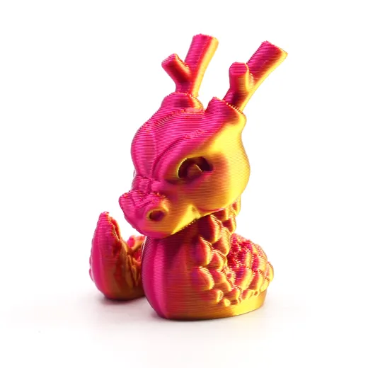
Cali-Dragon
Le « Benchy moderne » : stringing, ghosting, overhangs ET test multicolore — valide l'ACE Pro.
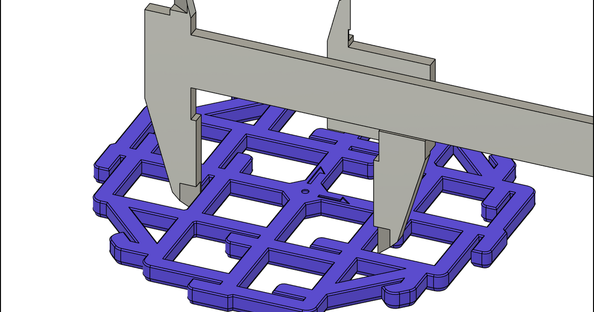
Califlower MK1
Calibration dimensionnelle + skew avec calculateur — indispensable avant Gridfinity.
Test de tolérance
Quel jeu (0,1-0,5 mm) ta machine résout — à faire avant tout print-in-place.
🎨 Multi-couleur qui claque (sans gaspiller 3 km de purge)
8
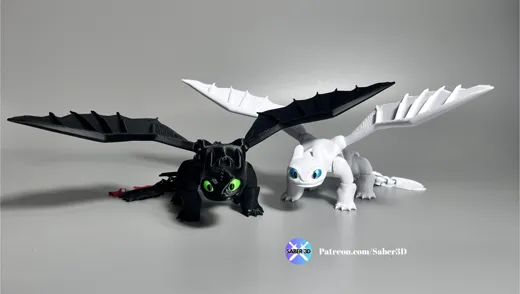
Flexi Toothless Dragon
Krokmou articulé print-in-place, profil multicolore fourni. Effet garanti sur les enfants.
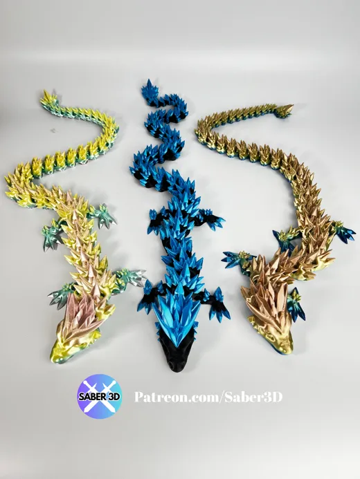
Crystal Dragon
Le dragon « cristal » iconique. Superbe même en 1 couleur silk (zéro purge).
HueForge — art mural
4 filaments empilés en couches fines = images « peintes » avec quasi zéro purge. LA technique intelligente pour l'ACE Pro.
Plaques 2 couleurs
Texte relief sur fond contrasté : le multicolore le plus rentable (1-2 changements). Plaque « Studio Maurisson » ?
🏠 Utile maison
15
Gridfinity
LE système modulaire de rangement (grille 42 mm, open source). Tiroirs, atelier, bureau — tu n'arrêteras jamais d'en imprimer.
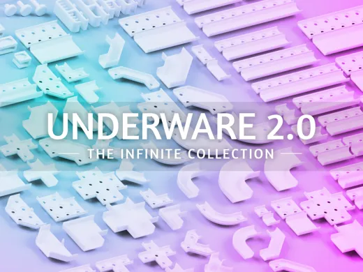
Underware 2.0
Canaux de câbles modulaires snap-fit sous le bureau — idéal sous le setup studio/piano.
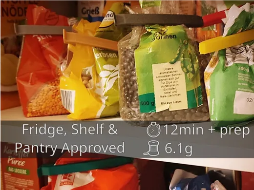
Bag Clip
Pince à sachets print-in-place : 11 min, 6 g. Parfait pour finir les fonds de bobine.
Organisateurs de bureau
Collection triée : porte-stylos, range-SD, supports casque…
Infinity Cube
Le fidget print-in-place hypnotique — en 2 couleurs via l'ACE Pro.
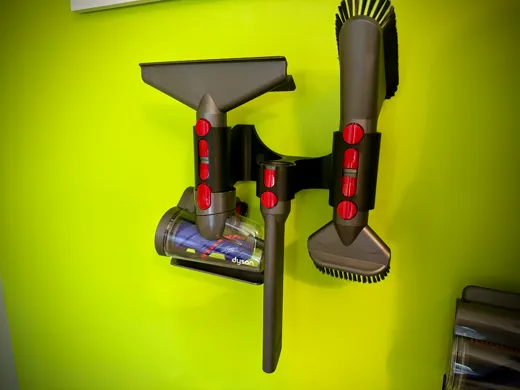
Rack accessoires Dyson V7-V15
Chaque embout clipse comme sur le dock d'origine — fini le tiroir fouillis.
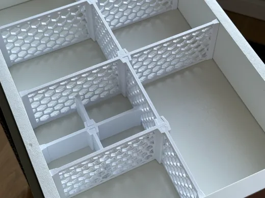
Séparateurs de tiroir paramétriques
Générateur aux dimensions EXACTES de tes tiroirs (8k téléchargements) — taille libre, non-Gridfinity.
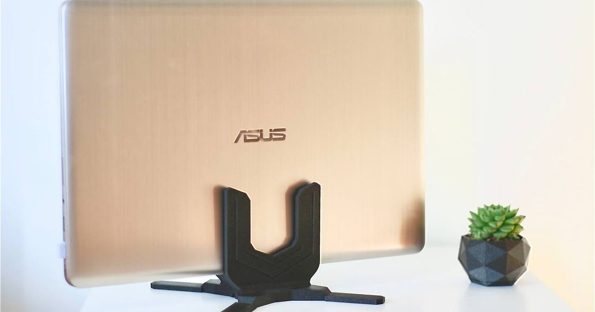
Support laptop vertical
Le laptop rangé façon monolithe : récupère 80 % de la surface du bureau.
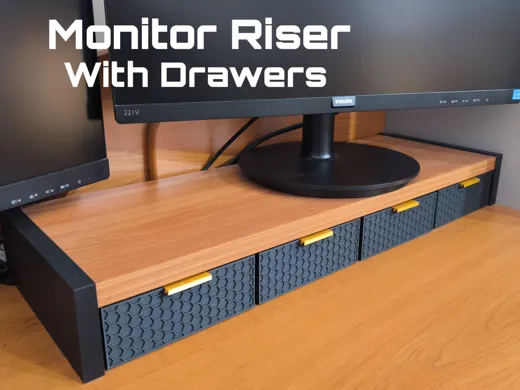
Réhausseur d'écran à tiroirs
Ergonomie + rangement : tiroirs coulissants intégrés sous l'écran.
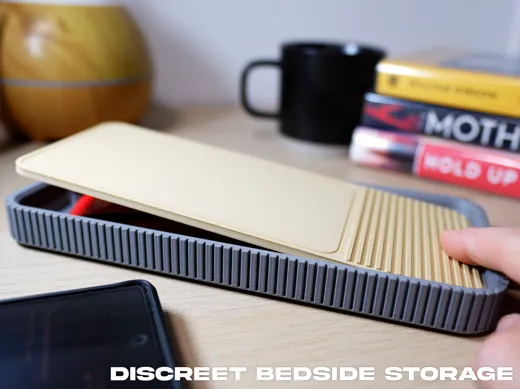
Plateau de chevet à double fond
On appuie sur un bord, le dessus se soulève — la planque discrète de table de nuit.
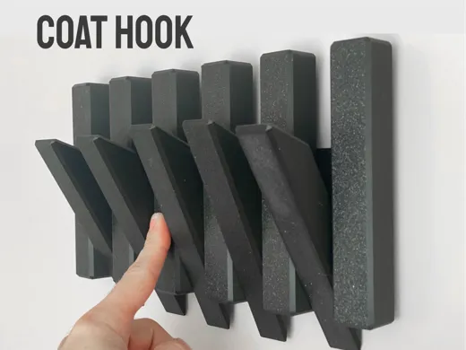
Patère 5 crochets repliables
Les crochets se déplient à la demande — design épuré, capacité d'un portemanteau.
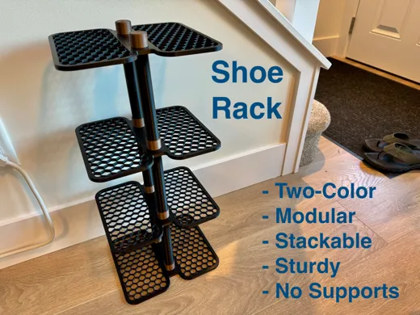
Range-chaussures empilable bicolore
Montants d'une couleur, plateaux de l'autre, emboîtés sans vis — pièces séparées, zéro purge.
🎵 Musique (piano, harmonica, studio)
49
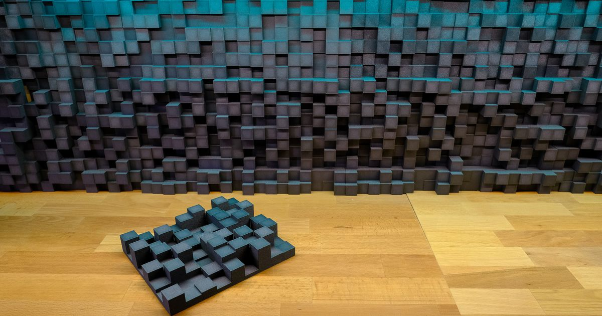
Panneaux acoustiques QRD (IA)
Vrai diffuseur quadratique qui casse les réflexions du studio tout en faisant une déco murale géométrique bluffante.
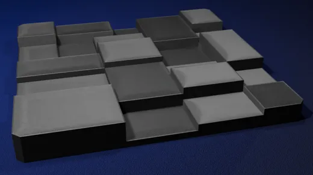
Diffuseur acoustique skyline
Skyline pseudo-aléatoire : effet acoustique réel et objet d'art mural, le tout sans support.
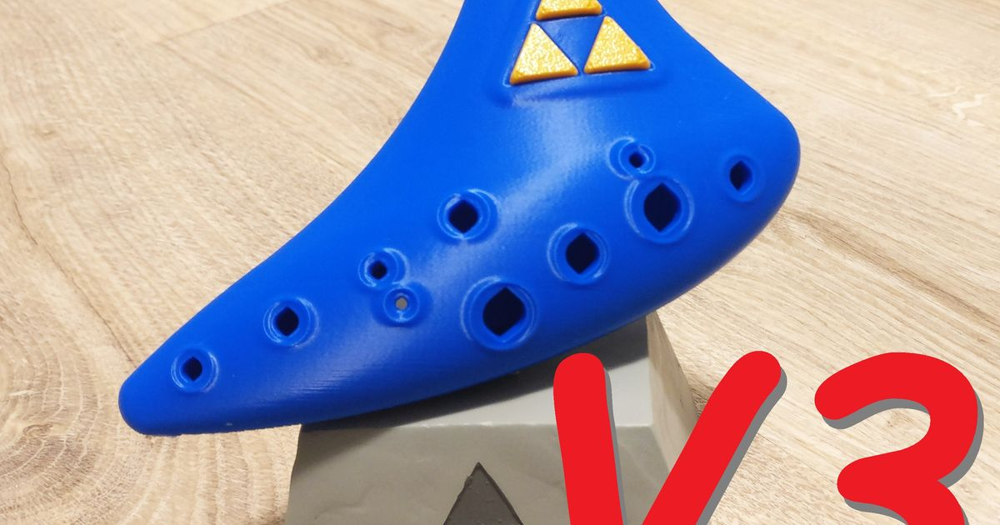
Ocarina of Time 12 trous Alto C
Le meilleur ocarina imprimable, le seul où toutes les notes sortent sans triche, accordé A4 à F6 et jouable pour de vrai.
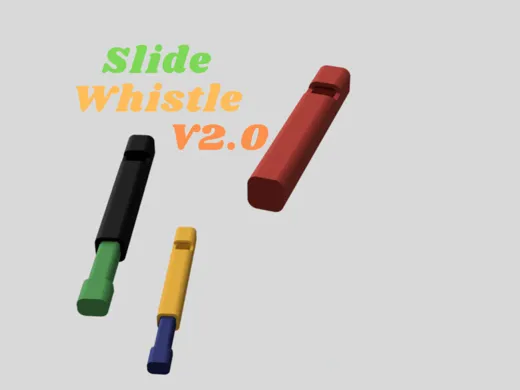
Sifflet à coulisse (Slide Whistle V2)
Slide whistle fonctionnel et très sonore, glissando façon cartoon, multi-couleur par pièce sans purge.
Capo guitare compliant
Mécanisme compliant en un seul morceau qui se serre tout seul, versions classique et acoustique, top noté.
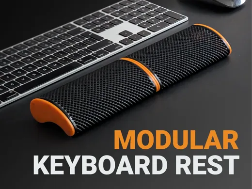
Repose-poignets clavier modulaire
Corps TPU souple plus embouts PLA clipsables, modulaire pour clavier complet ou souris : confort piano et MIDI.
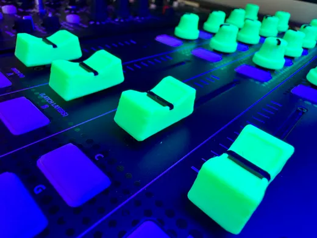
GlowControl knobs & faders MIDI
Knobs et caps de faders custom pour pots 6 mm et faders linéaires, modulaires et glow-in-the-dark.
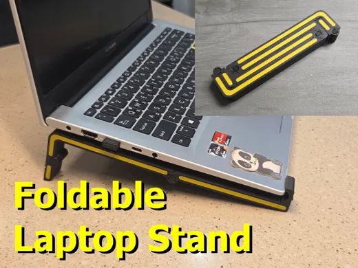
Support laptop pliable verrouillable
Pliant, snap-fit et aimanté : le compagnon de scène nomade idéal, très bien noté et sans support.
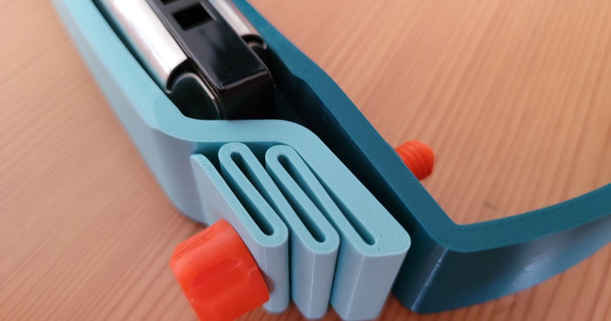
Harmonica holder tour-de-cou
Ajustable, multi-tailles → jouer piano + harmonica EN MÊME TEMPS. Pour toi, c'est LE print.
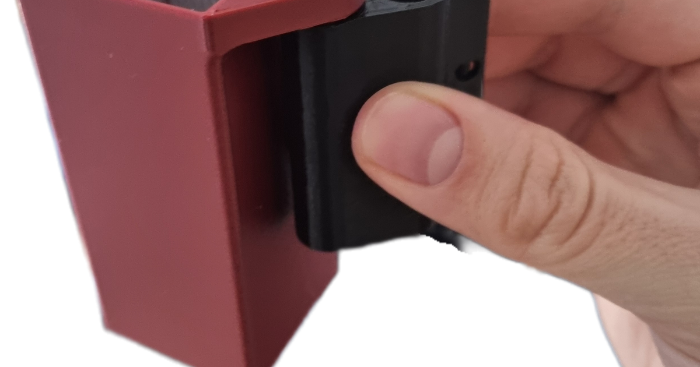
Holder pour pied de micro
Inserts TPU imprimables pour protéger les Special 20. Setup scène/studio.
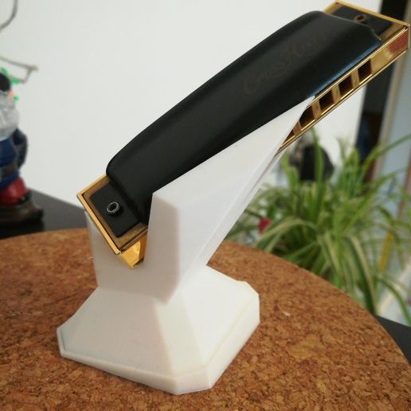
Présentoir harmonicas
Exposer la collection C/A/G (+D à venir) — en 2 couleurs = objet déco.
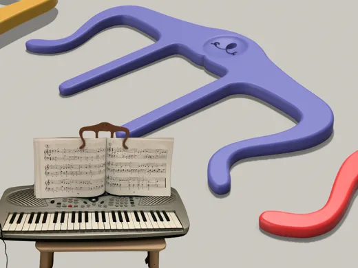
Music Book Clip
Pince anti-pages-qui-se-referment pour partitions au piano. Usage quotidien.
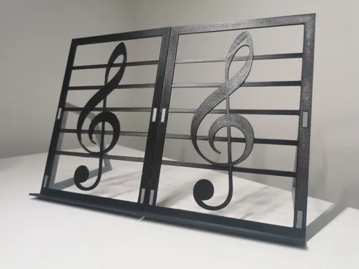
Pupitre pliable clé de sol
Pupitre de table déco — joli en 2 couleurs (changements par zone = purge minime).
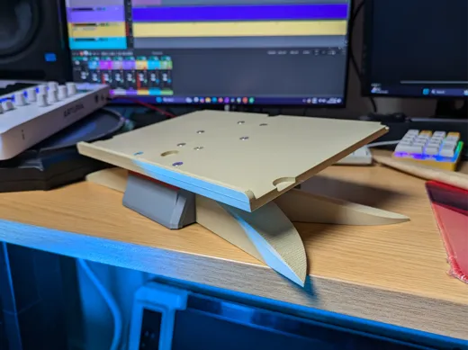
Stand Arturia Minilab 3
Surélève le Minilab au-dessus du clavier PC, angle parfait pour le studio Ableton. (Version mkII : Printables 109110.)
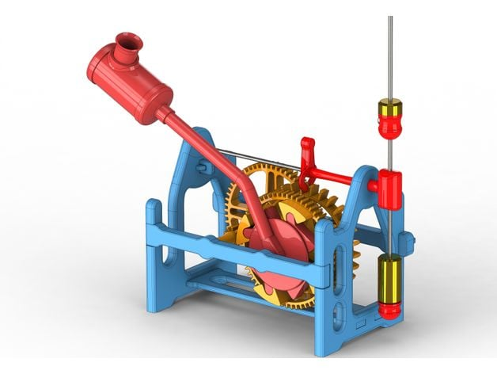
Métronome mécanique (Brian Law)
100 % imprimé et il tick-tocke vraiment — pendule réglable, ~2,5 min par remontage. Pièce de démo ultime.
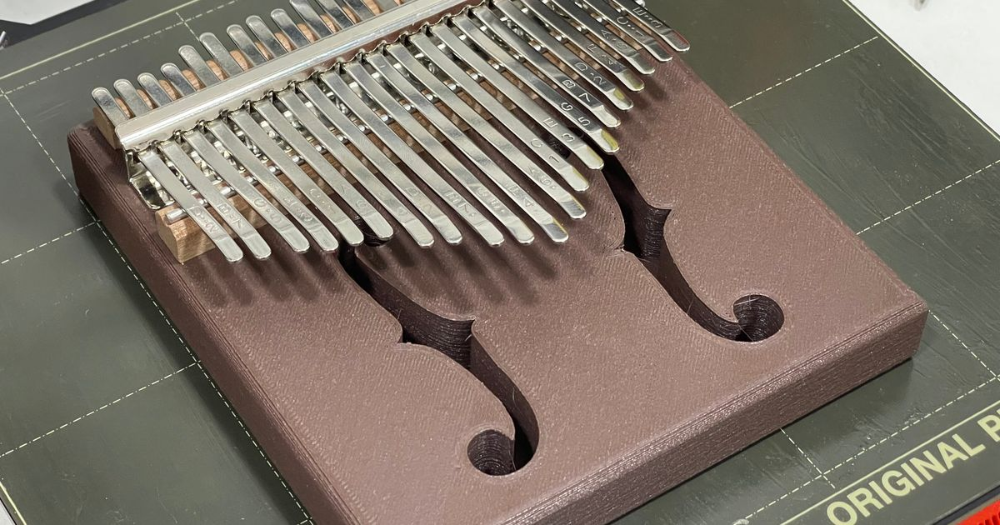
Kalimba imprimée V2
Corps solide = vraie résonance, cavité piezo pour brancher direct dans Ableton. Kit lames ~15 €.
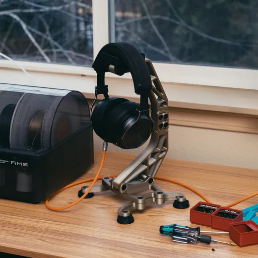
Support casque industriel
« One of my all time favourite 3D printed items » — le casque studio sur son trône.
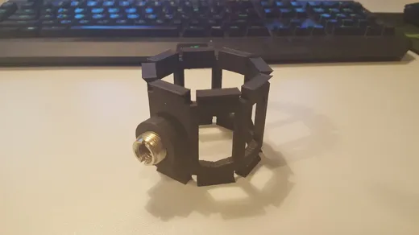
Shock mount micro fileté
Suspension anti-vibration pour gros micros — le son studio sans payer le prix Rycote.
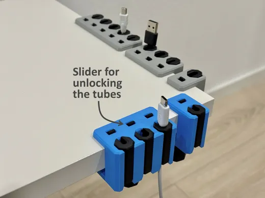
Range-câbles de bureau à clamp
Tubes à ressort au bord du bureau : jacks et MIDI à portée, jamais par terre.
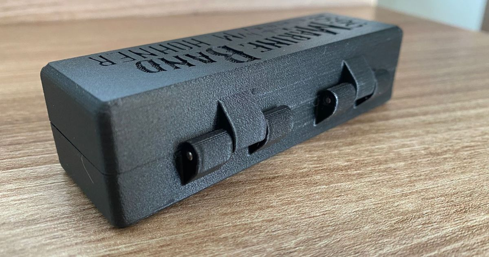
Étui harmonica coque + TPU
Coque rigide PLA + intérieur TPU moelleux (taillé Marine Band ≈ Special 20) — la collection C/A/G voyage protégée.
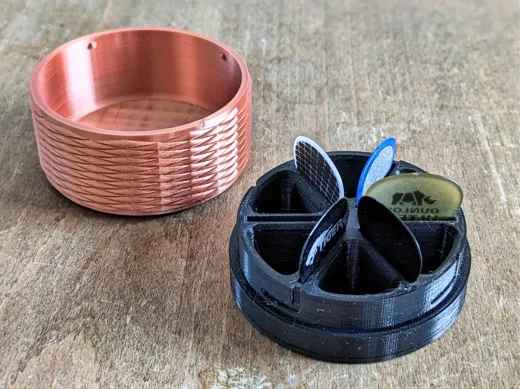
Étui à médiators (boîtes de volume guitare)
Boîte qui range jusqu'à 6 médiators, look bouton de volume de guitare électrique, couvercle à visser.
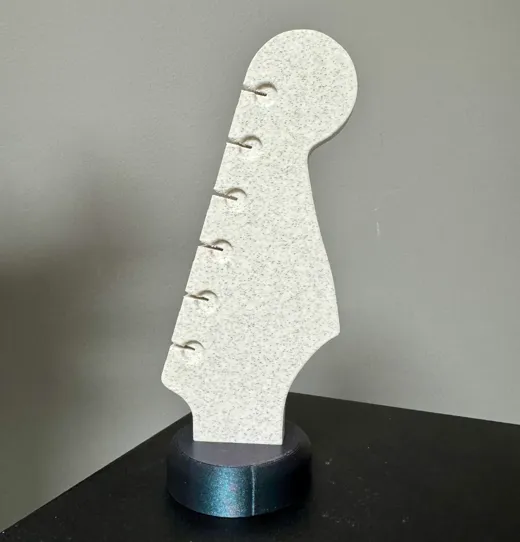
Porte-médiators headstock Stratocaster
Présentoir de bureau en forme de tête de Strato qui tient 6 médiators à portée de main.
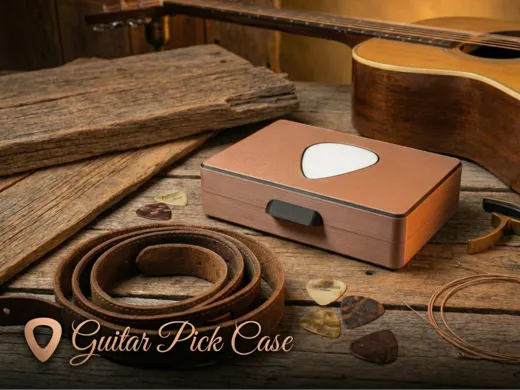
Étui médiators charnière print-in-place
Boîtier 4 fentes qui s'imprime d'un bloc avec sa charnière et s'ouvre à plat sur l'ampli.
Porte-médiators collable sur la guitare
Petit support qui se colle sur le corps de la guitare pour garder un médiator sous la main, imprime en 30 min.
Support casque industriel snap (JMcK)
Stand de bureau au style industriel taillé pour les gros casques de studio, sans colle.
Support casque snap-in compact
Hanger de bureau où le col s'emboîte dans la base, zéro vis zéro colle, parfait à côté du clavier.
Ocarina jouable 12 trous (Prusa)
Ocarina réellement accordé et jouable imprimé d'une pièce, avec son support.
Harmonica imprimable Prusa Mouth Organ + étui
Harmonica fonctionnel 3 pièces qui clipse sans vis, anches en La mineur, avec étui print-in-place.
Pop filter clipsable Neumann TLM 103
Filtre anti-pop qui se clipse direct sur la suspension d'origine du micro, pour les prises voix.
Pop filter universel à visser
Armature qui se visse sur le micro, tu ajoutes mousse ou tissu par-dessus, anti-pop maison.
Kalimba imprimée (Umpy)
Corps de kalimba à imprimer en infill dense pour la résonance, tu ajoutes lames + chevalet achetés.
Thumb piano tout imprimé 3 pièces (Alpes86)
Piano à pouces entièrement imprimable en 3 parties à coller, instrument jouable sans pièces achetées.
Cap de fader Akai MidiMix
Remplace les caps de fader d'origine du MidiMix par des plus gros et confortables, façon vraie console.
Guitar wall mount filaire (XYZ_Pierre)
Crochet mural ajouré et costaud, largeurs de manche 44 à 54 mm, se visse au mur.
Guitar Wall Hanger droit/incliné (Sabby)
Support mural en 2 variantes dont une inclinée pour les têtes asymétriques type Tele/Strato.
Stand universel guitare/basse au sol
Pied de sol imprimable qui accueille aussi bien une guitare qu'une basse.
Clip organisateur de câbles détachable
Clip de bord de bureau qui retient les câbles jacks/USB tout en les laissant retirables.
Organisateur de câbles latéral de bureau (Mojee3D)
Range les câbles sur le côté du bureau ou derrière, plusieurs configs possibles pour le home-studio.
Clamp iPad pour pied de micro/pupitre
Pince qui fixe un iPad/tablette sur un pied de micro ou pupitre pour lire ses partitions en jouant.
Pince bras articulé tablette/téléphone
Bras 100% imprimé qui se clampe au bureau et oriente une tablette pour les partitions ou tutos.
Bridge pin puller acoustique
Petit levier qui retire les chevilles de chevalet sans abîmer le bois lors d'un changement de cordes.
Pegwinder print-in-place
Manivelle remonte-cordes imprimée d'un bloc sans assemblage pour accélérer les changements de cordes.
Pied moniteur amorti TPU (print-in-place)
Support de moniteur avec inserts TPU qui découplent les vibrations et inclinent l'enceinte 5-25°.
Pied isolant pour enceinte (PETG/TPU)
Pied d'isolation à glisser sous un moniteur de studio pour casser les vibrations sur le bureau.
Train whistle 4 tons
Sifflet de train 4 sons qui s'assemble sans colle et sonne vraiment, gadget sonore qui marche.
PrintBone v1.1 — trombone jouable
Trombone entièrement imprimable et réellement jouable, version améliorée pour un assemblage plus net.
Slide flute — flûte à coulisse jouable
Flûte à coulisse imprimable qui produit un vrai glissando, instrument-jouet fonctionnel.
🌱 Plantes, jardin & animaux
26
Jardinière auto-arrosante (Prusa)
Réservoir ≥1 semaine + étiquettes Basilic/Menthe/Piment en relief. La référence.
Étiquettes de plantes
Texte contrasté 2 couleurs, purge minime — étiqueter tout GreenHub en vrai.
Vases en vase mode
Spirale continue : rapide, zéro purge, rendu céramique en PLA silk.
Goutte-à-goutte bouteille PET
2 210 likes : une bouteille 1,5 L tient ~4 jours d'arrosage autonome — le filet de sécurité des week-ends.
Station de semis auto-irrigante
Plateaux 6/9 cellules, dôme serre ventilé + 8 outils de semis — la station complète du potager.
Treillis nid d'abeille extensible
Modulaire, s'étend avec la plante — pothos et grimpantes du salon adorent.
Propagation Station (Prusa)
Station de boutures design avec canal LED intégré — vitrine parfaite pour les boutures.
Bac mural suspendu
Bac récupérateur interne + grille amovible + bec verseur — la plante au mur sans dégât d'eau.
Jouets chat print-in-place V2
Lot de jouets chat imprimes d'un bloc, zero support, zero assemblage : la valeur sure pour amuser le chat tout de suite.
Circuit de balle pour chat
Le classique circuit + balle qui tourne qui occupe le chat des heures, imprimable sans support.
Meowballs distributeur de croquettes
Circuit de billes qui distribue les croquettes : le chat joue pour manger, anti-glouton ludique a effet waouh.
Souris ressort flexi
Souris flexi print-in-place qui rebondit, irresistible pour les chats, imprimee articulee en un coup.
Griffoir de porte pour chat
Add-on griffoir qui se monte sur une porte : le chat se gratte en autonomie, gain de place.
Gamelle anti-renversement PETG
Gamelle aux parois rentrantes concue et testee en PETG : stable, propre, anti-eclaboussures.
Gamelle anti-glouton chat/chien
Gamelle a picots qui force l'animal a manger lentement, PETG food-friendly recommande.
Fontaine a eau deco pour animaux
Fontaine ruisselante qui incite chat et chien a boire, double comme feature deco. PETG, pompe a ajouter.
Porte-sachets de laisse mains-libres
Porte-sachets crottes qui clipse sur la laisse ou la ceinture : l'accessoire promenade indispensable.
Crochet sacs a crottes pour laisse
Crochet malin ou on glisse le sachet noue, la gravite le tient pendant la balade. Impression express.
Mangeoire oiseaux Printednest 4.5
La mangeoire star de MakerWorld, design soigne et tuto video, PETG/ASA pour tenir dehors.
Mangeoire colombages + boule de graisse
Mangeoire colombages charmante avec emplacement boule de graisse dans le faitage. PETG exterieur.
Hotel a insectes personnalisable
Hotel modulaire 5 compartiments a remplir de matieres naturelles pour abeilles solitaires et coccinelles. ASA/PETG.
Hotel a insectes modulaire hexagonal
Systeme hexagonal extensible avec modules pool, couvercle anti-oiseaux et deco papillon. ASA conseille.
Grotte aquarium poissons & crevettes
Grotte aux courbes douces, cachette pour poissons de fond et crevettes. PETG aquarium-safe, bords lisses.
🎁 Cadeaux qui impressionnent
5
Lithophane personnalisée
Photo de famille → panneau qui se révèle à contre-jour (générateur : itslitho.com). Grands-parents = larmes garanties.
Boîte cadeau puzzle
Le billet est DANS la boîte qu'il faut résoudre. Cadeau dans le cadeau.
Fidgets (collection)
Gear rings, sliders, clickers — petits prints à batcher, cadeaux d'appoint inépuisables.
Boîte à musique print-in-place
Manivelle + mécanisme à picots imprimés d'un seul bloc — l'effet « waouh c'est imprimé ?! » assuré.
Boîte cadeau à iris
S'ouvre comme un diaphragme d'appareil photo, ressort intégré — pour offrir une carte cadeau avec style.
🧸 Jouets & jeux
53
Flexi Skeleton T-Rex articulé
Squelette de dino articulé, os blancs sur fond sombre, effet waouh immédiat sans support.
Flexi Skeleton Spinosaure
Pendant du T-Rex avec voile dorsale spectaculaire et corps articulé print-in-place.
Pieuvre articulée nouvelle version
Le flexi viral aux tentacules ondulants, fidget irrésistible et best-seller.
Benchy Robot Transformer
Le Benchy qui se transforme en robot articulé avec tourelles cachées, sans montage.
Bulldozer jouet chenilles PiP
Chenilles print-in-place et lame mobile, vrai engin de chantier jouable en snap-fit.
Mini flipper de table
Flippers fonctionnels et lanceur élastique, vrai jeu d'adresse sans électronique.
Pistolet à élastiques 21 coups
Blaster élaboré à trigger et indexation refondus pour une longue portée.
Marble Run modulaire empilable
Circuit de billes nouvelle génération, blocs empilables et reconfigurables sans support.
Floppy Dragon (flexi PiP)
Dragon flexi qui tient debout, ouvre la gueule et bat des ailes — effet waouh immédiat.
Pelleteuse entièrement articulée
Pistons hydrauliques simulés et tourelle 360°, tout sort articulé du plateau sans montage.
Baliste à carreaux PiP
Mini baliste qui tire vraiment, imprimée en place, un classique adoré de la communauté.
Serpent flexi géant 1,60 m
47 segments pour un serpent d'1,60 m spectaculaire, parfait en couleurs alternées.
Labyrinthe-cube à bille captive
Puzzle à gravité avec bille piégée par pause-print, satisfaisant à résoudre en tournant le cube.
Mini flipper de bureau
Vrai flipper jouable avec flippers, tubes guides et lanceur à élastique sur le bureau.

Couteau papillon balisong PiP
Balisong fidget quasi sans friction, addictif, sort fonctionnel directement du plateau.
Caméléon flexi multicolore
Caméléon articulé pensé multicolor sans support, exploite l'ACE Pro à fond.
Scorpion flexi PiP
Pattes mobiles, pinces et queue segmentée flexible, fidget de bureau imprimé en place.
Toupie + lanceur turbo gyro
Lanceur à crémaillère et élastique qui catapulte la toupie à très haute vitesse.
Arbalète à élastiques PiP
Gâchette repliable et carquois de carreaux imprimés, imprimée en place en une fois.
Pieuvre flexi multicolore
Pieuvre articulée imprimable multicolore avec ou sans AMS, sans aucun support.
Requin-marteau flexi PiP
Requin-marteau articulé imprimé en place, aucun support ni montage, superbe en PLA.
Cute Mini Octopus
LE flexi légendaire à tentacules ondulantes — des milliers de makes, d'une traite sans assemblage.
Flexi Rex (liens renforcés)
Le T-Rex articulé « kid-proof » : maillons renforcés, survit aux enfants les plus brutaux.
Flexi Baby Axolotl
Axolotl adorable en version multi-pièces pensée ACE : couleurs par pièce, quasi zéro purge.
Surprise Egg — Tiny Haul Truck
Un œuf Kinder imprimé : on l'ouvre, un mini camion print-in-place en sort (12 œufs dans la série).
PolyCube articulé
Cube print-in-place en 4 pièces imbriquées, chacune dans sa couleur → multicolore éclatant sans purge folle.
Marble Run print-in-place
Circuit à billes avec ascenseur hélicoïdal qui sort de la plaque déjà fonctionnel.
Marble Run 003 modulaire
Ascenseur, spirale, looping : chaque module dans une couleur = arc-en-ciel sans purge.
Toupie façon Beyblade
Toupie + lanceur à crémaillère, tolérances réglées pour l'impression : ça arrache.
Pocket Catapult
Catapulte de poche 3 pièces snap-fit, zéro vis zéro colle — le jeu d'adresse de bureau ultime.
Bateau de bain à remontoir
100 % imprimé et il navigue vraiment — classique culte, test d'engrenages inclus.
Dice Tower tête de dragon
Tour à dés SANS supports : les dés tombent par les cornes et roulent sur la langue — wow en soirée jeux.
TANKY — tank à chenilles fonctionnelles
Print-in-place : les chenilles roulent VRAIMENT et le canon à air tire des projectiles. Le jouet ultime.
Échiquier enroulable print-in-place
S'enroule sur lui-même avec charnières mécaniques imprimées d'un bloc — cadeau classe garanti.
Quarto — jeu complet
Le célèbre jeu abstrait Gigamic entièrement imprimable : plateau + 16 pièces, victoire diabolique.
Starter Burr Set
15 pièces = des dizaines de casse-têtes burr différents (Printable Puzzle Project, la référence).
Trébuchet fonctionnel
Vrai trébuchet médiéval rotatif qui catapulte à travers la pièce — STEM + guerre de bonbons.
Flexi Hedgehog
Le flexi qui cartonne : hérisson aux piquants articulés qui frétille dans la main, sans support.
Mölkky de bureau
Le jeu de quilles finlandais aux proportions officielles, réduit ×5 — ou en géant si tu scales.
Planeur élastique monobloc
Traverse toute une pièce, quasi incassable — le cadeau express à 20 g de filament.
Katana télescopique 天旋
Se déploie d'un coup de poignet avec un shlack ultra satisfaisant — le hit kinetic 2025.
Morf Worm squishy (TPU)
S'étire, se tortille, se compresse en silence total — hypnotique. ⚠️ TPU = tube arrière.
🏮 Déco & lumière
48
Organic Ripple Lamp 2.0
Suspension a surface ondulee texturee, look studio scandinave, diffusion douce et timeless.
Organic Flow Studio Lamp (LED Kit)
Sculpture fonctionnelle aux lignes fluides avec canal cache-cable integre, finition impeccable.

Organic Sculpted LED Lamp
Contours continus qui diffusent un glow ambiant calme, parfaite en lampe de chevet.
OrbiFlora — lampe 100% imprimee
Des feuilles geometriques qui fleurissent et projettent des motifs radieux au mur, effet waouh.
Octopus Table Lamp (LED & E14)
Pieuvre organique aux tentacules sculptes, un vrai objet de designer pose sur la table.
Veilleuse Bebe Dino (LED)
Veilleuse dino adorable avec diffuseur RGB obtenu par simple swap de couleur, zero purge.
Veilleuse Poule LumLings
Lampe de chevet enfant en forme de poule, pieces qui s'emboitent au clic sans colle.

Neon LED personnalisable
Neon LED entierement parametrable : un canal par lettre pour la bande, base cache-cable.
Cree ton propre neon
Generateur de neon perso, depose ta bande LED dans le canal, deco bureau ou gaming.
Photophore Nenuphar (LED)
Petales geometriques en nenuphar, jeu d'ombres magnifique allume comme eteint.
Sparse Time — horloge murale
Cadran geometrique epure a trois chiffres, l'absence intentionnelle fait tout le style.
Etagere flottante fixation invisible
Etagere a systeme keyhole cache, zero vis visible, entierement parametrable.
Range-stylos Carpes Koi
Deux carpes koi entrelacees en sculpture, les nageoires creent des compartiments naturels.
Range-stylos Asanoha (Kumiko)
Geometrie Kumiko japonaise, 15 inserts + 3 coques pour une touche raffinee sur le bureau.
Corbeille tressee facon osier
Tissage realiste facon osier qui exploite a fond la precision FDM, deco chaleureuse.
Serre-livres dragon émergent
Un dragon traverse la pile de livres, effet creature-emerging waouh garanti.
Serre-livre optimisé impression
Zéro support, peu de filament, le classique fiable invisible derrière les livres.
Enseigne néon LED personnalisable
Canal pour bande LED RGB, aucun support, texte sur mesure pour un néon mural.
Vase spirale torsadé (vase mode)
Vase mode sans couture, scalable au slicer, courbes continues hypnotiques.
Tête de David haute résolution
David optimisé pour minimiser les supports, pièce déco classique impressionnante.
Pot géométrique auto-arrosant
Dodécaèdre qui joue ombre et lumière avec réservoir auto-arrosage (575 likes).
Brûle-encens backflow érosion rivière
Canaux sculptés qui guident la fumée en cascade, effet waterfall mesmérisant.
Cadre photo magnétique
Plaque customisable et aimants pressés à la main, se colle sur toute surface magnétique.
Horloge murale Modern Elegance
Carré épuré, repères jaunes et aiguille rouge, mécanisme à quartz standard.
Lampe origami pliante print-in-place
Imprimée à plat puis pliée à la main, diffusion lumineuse différente à chaque pli.
Mont bonsaï encens + cascade
Paysage montagneux, bonsaï et cascade de fumée, sculpture-objet façon estampe.
Florahedron
Abat-jour géodésique clipsé sans vis ni colle, rendu suspension de designer. ⚡ douille E27 requise.
Hexaleaf (Nanoleaf DIY)
Hexagones muraux lumineux clipsables pilotés en WiFi. ⚡ ruban WS2812B + ESP8266 (WLED).
Hollow Clock V
Aiguilles qui flottent dans un anneau vide, mécanisme magnétique caché. ⚡ RP2040 + moteur pas-à-pas.
Cadran solaire digital
Affiche l'heure en chiffres dans son ombre — zéro électronique, pure géométrie.
Vases fuzzy skin organiques
La texture fuzzy skin imite la céramique artisanale : « on dirait pas que c'est imprimé ».
Wave Wall Art — La Grande Vague
En couches de couleurs avec cadre snap-fit — changements par hauteur, purge quasi nulle.
Waveforms #1 — art mural paramétrique
21 lames qui ondulent en relief : jeu d'ombres spectaculaire, rendu galerie d'art.
Lampes-planètes lithophane ⌀150
Tout le système solaire en lampes : Jupiter qui s'allume sur le bureau, effet wahou garanti.
Triangle de Penrose
Le triangle « impossible » d'Escher en vrai : sous le bon angle, le cerveau refuse d'y croire.
Photophore à projection d'ombres
Projette des silhouettes personnalisables sur les murs — figures interchangeables.
Globe terrestre tournant
Tourne dès la sortie du plateau, zéro assemblage — objet de bureau ou cadeau express.
⚙️ Mécanique fascinante — les prints « impossibles autrement »
80
Manta Ray cinétique biomimétique
L'aile de raie ondule via biellettes multi-points, mouvement hypnotique.
Pince à cheveux print-in-place
Charnière spirale compliante qui sort fonctionnelle du plateau, 4 ressorts.

Engrenage planétaire éducatif
Démonstrateur épicycloïdal sur socle, comprendre le train planétaire en main.
Infinity Cube à charnières engrenées
Cube infini à charnières-engrenages, le fameux comment c'est possible.
Iris box paramétrique
Boîte à iris mécanique qui s'ouvre en spirale, paramétrable et sans aucun support.
Iris box print-in-place verrouillable
Iris monobloc qui sort de la plaque déjà fonctionnel, effet purement magique.
Étau fractal (TeachingTech)
L'étau fractal légendaire dont les mâchoires épousent n'importe quelle forme.
Pince compliante monobloc
Pince sans charnière où le ressort est le plastique lui-même, à faire en PETG.
Brucelles compliantes ultra-fines
Mécanisme compliant culte, ressort intégré, à peine 3 g de filament.
Do-Nothing Machine (Trammel d'Archimède)
Machine inutile addictive qui trace une ellipse, impossible à reposer.
Engrenages sphériques ABENICS
Joint sphérique actif : une boule qui s'engrène dans tous les axes, le waouh absolu.
Automate chenille à manivelle
Automate dont la manivelle transforme la rotation en reptation saccadée.
Fidget spinner suringénié print-in-place
Cage d'engrenages imbriqués qui sort déjà tournante de la plaque.
Easy Strandbeest
Une machine de Theo Jansen qui MARCHE au vent d'un ventilo — jambes print-in-place pré-assemblées.
Platform Jack print-in-place
LE classique : un cric à ciseaux avec vis sans fin qui sort fonctionnel du plateau. Impossible à usiner autrement.
Three Heart Gears
Le cœur-engrenage iconique : un cube d'engrenages qui redevient cœur à chaque tour de manivelle.
Boîte de vitesses 3 rapports + R
Une vraie boîte à crabots coulissants : on passe les vitesses à la main. Hypnotique en démo.
Gyroscope print-in-place
Cardans imbriqués imprimés d'un bloc en 30 min : on libère les anneaux et ça tourne sur 3 axes.
Moteur en étoile
Les pistons montent et descendent quand on tourne l'hélice — quasi direct du plateau.
Compteur 7 segments mécanique
Un afficheur 100 % mécanique à cames qui reconfigure ses segments chiffre par chiffre.
Cryptex à code
Façon Da Vinci Code, code 4 chiffres personnalisable — la boîte à secret parfaite pour offrir.
Table tensegrity
« Flotte » retenue par des fils en tension — déclenche systématiquement un débat de physique.
Rolling Ball Clock
L'horloge à billes culte : les billes d'acier roulent et s'empilent pour afficher l'heure. Hypnotique en continu.
Pendule mécanique 100 % imprimée
Vraie horloge à échappement, sans roulements ni électronique — le Graal du printeur mécanique.
Spirale cinétique hypnotique
Motorisée USB-C, tourne en boucle : illusion de mouvement perpétuel sur le bureau.
Marblevator façon Rube Goldberg
Came, crémaillère et pince à bille s'enchaînent en boucle — du gzumwalt pur jus.
Automate escalier marble run (manivelle)
Un ascenseur à billes à biellettes actionné à la manivelle, entièrement print-in-place, qui remonte les billes en haut du circuit.
Automate ours patineur
Tu tournes la manivelle et l'ours glisse comme sur la glace, mécanisme à cames très satisfaisant.
Sculpture cinétique KiMe
Sculpture rotative façon David C. Roy, presque 100% imprimée sans support, mouvement hypnotique entretenu par ressort.
Sculpture cinétique à ressort (don culnan)
Variante alimentée par un ressort de mètre ruban qui tourne jusqu'à ~55 min sur une seule remontée.
Grenade cinétique télescopique
Corps télescopique qui coulisse et s'étire dans un mouvement fluide ultra-satisfaisant, sans support.
Engrenages elliptiques
Deux roues ovales qui se transmettent une vitesse variable, démonstration parfaite des engrenages non circulaires.
Mécanisme de Genève (multi-pièces couleur)
Version assemblée en plusieurs pièces pensée pour combiner les couleurs, mouvement rotatif intermittent classique.
Coffret puzzle Extreme Edition
Couvercle verrouillé par clé cachée, 20 vis secrètes, 3 types de tournevis planqués : le cadeau-énigme ultime.
Maze Puzzle Box spirale
On guide un ergot caché dans un labyrinthe spiralé interne en tournant et inclinant la boîte pour l'ouvrir.
Secret Dice (compartiments cachés)
Cube 100mm à deux compartiments secrets débloqués en manipulant les faces, puis une boîte interne s'extrait.
Fidget compliant à bascule (clicker bistable)
Mécanisme compliant bistable qui claque entre deux positions, impossible à faire autrement qu'imprimé.
Fidget compliant parallèle
Démontre la réduction du mouvement parasite dans un mécanisme compliant, retour tactile unique.
Magnificent Marble Machine (manivelle)
100% imprimée, juste des billes 9,5mm : chaîne, escalier élévateur, 2 ascenseurs planétaires, sans vis.
Bucket Lift modulaire (Out of Marbles)
Élévateur à godets à manivelle, base d'un système modulaire de 20+ modules de circuits à billes interchangeables.
Apex marble machine
Machine à billes élégante sans support, billes 8mm, lits de 170mm suffisent pour la Kobra S1.
Pompe péristaltique manuelle
Sort de l'imprimante pré-assemblée : tu ajoutes le tube et ça pompe du liquide en écrasant la tubulure.
Générateur à manivelle (Tom Stanton)
Mécanisme à manivelle qui produit réellement de l'électricité, démonstration pédagogique parlante.
Voiture à remontoir à ressort (Spring Car 4x4)
Moteur à ressort 100% imprimé, zéro pile : tu remontes, tu lâches, ça file.
Wind-up Gear Car
Voiture à remontoir avec train d'engrenages apparent, pignon flottant qui débraye en fin de course.
Tourbillon Mechanica (horloge à échappement)
Horloge à tourbillon squelette quasi 100% imprimée, vitrine d'horlogerie mécanique sur le bureau.
Triple Axis Tourbillon
Tourbillon à trois axes qui pivote dans tous les sens, objet cinétique fascinant à regarder tourner.
Strandbeest de bureau (Jansen)
Mécanisme de Jansen aux ratios exacts, manivelle, marche fluide entièrement imprimée sur le bureau.
Whirligig colibri (Greg Zumwalt)
Entraîné par le vent : double mouvement avant-arrière + 4 battements d'ailes par cycle via vis sans fin et engrenage facial.
Aigle volant automate
100% imprimé, pièces qui s'emboîtent sans vis ni colle, l'aigle bat des ailes à la manivelle.
Mécanisme d'ornithoptère
Reproduit le battement cyclique d'aile d'un ornithoptère, 100% imprimé sans matière ni colle.
Excavatrice print-in-place (chenilles)
Bras, flèche et godet articulés + chenilles sans support assemblées par clips, cab rotatif 360°.
Perfect Gear Bearing
Roulement à engrenages chevrons impossible à fabriquer autrement qu'en impression, sort préassemblé et tourne ~6s.
Planetary Gears 3-en-1 print-in-place
Trois trains planétaires imprimés d'un coup, satisfaisant à faire tourner, démontre les ratios.
Pieuvre flexi print-in-place
Tentacules articulés au mouvement fluide, joints nets dès la sortie du plateau, sans support.
Gecko flexi articulé
Lézard print-in-place aux articulations souples sans accrocs, ni assemblage ni support.
Caméléon des sables flexi (Horned Lizard)
Lézard cornu print-in-place qui ondule dès la sortie du lit, profil exotique qui change des dragons.
🔧 Atelier, garage, outdoor & réparations
41
Semoir Twist-to-Tune (CRV.3D)
Semoir à manivelle avec molette de débit réglable, des micro-graines au mélange fleurs sauvages, un seul boulon M3.
Piège à limaces à bière (sans poison)
Piège éco zéro poison qu'on enterre, remplit de bière et vérifie via le couvercle amovible.
Clip plante réglable 30-50 mm
Clip tomate verrouillable qui s'adapte de 30 à 50 mm, 6 min et 1,6 g pièce, parfait en gros batch.
Clip tomate pour ficelle
S'accroche direct sur la ficelle sans étrangler la tige, à sortir par dizaines en une nuit.
Étui sécateur de ceinture
Holster simple pour sécateur sur ceinture ou tablier, fini de chercher l'outil au potager.
Bouchon arrosoir 2-en-1 pour bouteille
Transforme toute bouteille PET en arrosoir avec deux buses interchangeables jet doux ou concentré.
Pelle + râteaux à gouttière
Kit pelle et deux râteaux demi-lune au rayon des gouttières 112 mm, version manche déporté pour avancées de toit.
Support mural tuyau d'arrosage (OZKAN)
Support tuyau ultra-solide testé 4 ans sans casse, points de fixation renforcés.
Ramasse-boule de pétanque à clip
Pince qui s'ouvre au contact de la boule et se referme en remontant, on ramasse sans se baisser.
Support mural raquette padel
Crochet long pour dragonnes épaisses plus crochet court pour fines, range propre au mur.
Support mural raquette tennis H/V
Raquette ou sac en vertical, horizontal ou incliné, décroché en un seul geste.
Range-skis mural minimaliste (Swissmade)
Support skis épuré fixé avec deux vis, versions PLA et ASA plus variante multicouleur officielle.
Support pompe vélo OUTZAC 3-en-1
Clipse sur le cadre avec sangle velcro, à imprimer en PETG ou ASA pour résister au soleil.
Poteaux + pince filet ping-pong
Poteaux et pince réglables séparément pour ajuster le filet à n'importe quelle table.
Honeycomb Storage Wall
LE mur d'atelier modulaire culte : panneaux nid-d'abeille + des centaines de crochets/boîtes communautaires.
French Cleat System
Tasseaux français imprimés : porte-outils ré-agençables en 2 secondes sur le mur du garage.
Organiseur de vis empilable
16/32 compartiments, étiquettes interchangeables en 2ᵉ couleur (pièces séparées = zéro purge).
Trusquin magnétique 2-en-1
Traçage bois + chercheur de centre avec réglet acier et aimant — l'outil qu'on n'achète plus.
Jauge à vis M2→M10
Identifie n'importe quelle vis en 3 secondes. Chiffres en relief bicolores = purge minime.
Bobinoir de filament
Re-spooler les recharges et bobines capricieuses de l'ACE Pro. Roulements 608 requis.
Arroseur-tracteur autonome
100 % imprimé, AVANCE TOUT SEUL à la pression d'eau en suivant le tuyau. PETG obligatoire.
Sardines à visser
Tire-fond intégré : mord les sols durs où les piquets classiques plient. PETG fluo.
Mousquetons QuickLoc
Compatible MOLLE, print-in-place : sort de l'imprimante déjà articulé. Sac, camping, garage.
Support téléphone vélo
100 % imprimé, vis et mécanisme inclus — zéro quincaillerie. PETG/ASA (soleil + vibrations).
Générateur pieds de meuble paramétrique
Fabrique l'embout exact de n'importe quelle chaise, table ou tabouret au lieu de jeter le meuble.
Pied de meuble réglable (mise à niveau)
Pied vissé réglable en hauteur : fini la table ou l'armoire qui bancale.
Patins anti-bruit anti-vibration TPU
Embouts TPU paramétriques qui font taire la chaise qui crisse sur le carrelage.
Taquet d'étagère IKEA KOMPLEMENT renforcé
Le pin PAX/KOMPLEMENT cassé en version super solide, garde la vis d'origine.
Taquet d'étagère IKEA BESTA
Support de tablette BESTA introuvable en magasin, réimprimé en 15 minutes.
Roulette de panier lave-vaisselle (Bosch/Siemens/Neff)
La réparation reine : roulette + clip en PETG, évite de racheter tout le panier.
Roulette + clip rail haut lave-vaisselle Bosch
Compatible roulettes OEM, économise les 50-80 € du panier complet.
Support de tringle à rideaux paramétrique
Bride de tringle de 10 à 80 mm pour remplacer celle qui a cédé.
Support tringle anti-arrachement (casse contrôlée)
Génie : si on tire sur le rideau, un insert remplaçable casse au lieu du mur.
Générateur de clip de fixation (clamp paramétrique)
Clip universel ajustable (bras, hauteur, épaisseur) pour réparer un peu tout.
Générateur de charnières custom
Charnière de remplacement sur-mesure, résistance réglable, imprimée en place.
Générateur de clip de câble (clou ou vis)
Recrée n'importe quel clip de gaine ou câble cassé, tout diamètre.
Générateur de rivets push-in / clips à enfoncer
Les clips de garniture qu'on perd toujours (auto, électroménager) refaits à volonté.
Bouton de four / électroménager universel
Bouton plastique fondu ou fendu remplacé, avec ou sans ergot de butée.
Languette d'étagère de porte de frigo
Répare le bac de porte cassé au lieu de payer 55 € la pièce détachée.
Connecteur de chaîne de store enrouleur
Le clip de chaînette de volet qui se désagrège au soleil, refait neuf.
🍳 Cuisine & organisation
29
Dérouleur essuie-tout Hex
Maille hexagonale costaud et légère, 135 g, zéro support, taillé pour petits plateaux.
Dérouleur essuie-tout FlowLine
Nervures verticales élégantes, s'imprime propre sans support, scalable selon le rouleau.
Dessous-de-plat extensible Fixels
« Tissu » imprimé en place qui s'étend comme une maille articulée, effet waouh garanti.
Support tablette/livre cuisine mural
Mural personnalisable à la taille de la tablette, minimaliste, libère le plan de travail.
Distributeur d'œufs roulant frigo
Les œufs roulent vers l'avant à chaque prise, empilable, 6-7 œufs/unité, top-noté.
Organiseur sachets de thé à tiroirs
3 tiroirs × 3 compartiments, verrouillage fermé et butées à l'ouverture.
Porte-éponge aimanté évier
3 aimants collés après impression, s'accroche au flanc de l'évier, simple et malin.
Distributeur coton + coton-tiges
Compartiment cotons Ø61 mm pile et découpe d'accès avant, imprimé sans support.
Organiseur maquillage rotatif 360°
Tourne à 360° pour accès facile pinceaux et cosmétiques, gros plébiscite communautaire.
Support sachet congélation mains libres
Tient le sac ouvert pour verser sans renverser — un vrai deuxième paire de mains.
Support filtres café V60
Cadre angulé qui épouse la courbe des filtres coniques, connecteur coulissant stable.
Égouttoir vaisselle minimal + couverts
Bec verseur qui guide l'eau vers l'évier, picots plats et bac couverts, design épuré.
Ouvre-bocal sous meuble
Un quart de tour d'une main et le couvercle le plus récalcitrant cède. « Pourquoi ça n'existait pas chez moi ? »
Indicateur lave-vaisselle propre/sale
Aimanté, texte bicolore par changement de couche = 1 seule purge. Cas d'école ACE Pro.
Distributeur de canettes
Gravitaire, 6 canettes, empilable : le frigo devient un rayon de supermarché.
Multiboard
LE système mural modulaire (700+ pièces gratuites) : pegboard, crochets, bacs, étagères — multiboard.io.
Carrousel à épices
Rotatif sur 20 cm² de plan de travail — les pots en verre touchent la bouffe, pas le print.
Pupitre pliable livre/tablette
Print-in-place (14k+ téléchargements) : tient le livre de recettes puis disparaît à plat dans un tiroir.
Distributeur de sacs
3 pièces séparées, chacune dans sa couleur = tricolore sans une goutte de purge.
Essoreur de tube à cliquet
On tourne la molette, le tube se vide jusqu'à la dernière molécule. Satisfaction mécanique garantie.
Rack à verres sous étagère
3 verres à pied suspendus tête en bas, gabarit de perçage inclus — très bar à vin.
Porte-rasoir ventousé
Se clipse sur une ventouse du commerce : le rasoir sèche suspendu, zéro rouille.
Crochet table à repasser
Suspend la table par le pied en T derrière une porte — buanderie nette en 2 vis.
🏡 Spécial Airbnb — « Chez Maurisson » édition boutique-hôtel
20
Set dessous-de-verre hexagonaux + support
Sous-verres géométriques et porte-coasters assorti pour une touche déco soignée sur la table d'accueil.
Porte-parapluies mural minimaliste
Mural à dos plat, discret et propre dans l'entrée, imprimable sans support.
Porte-serviette invité à bille interne
Serre la serviette sans crochet ni ressort, lignes courbes élégantes parfaites pour l'essuie-mains.
Distributeur savon élégant rechargeable
Texture matelassée chic, plusieurs variantes, compatible pompe 28 mm standard et rechargeable.
Veilleuse lithophane lanterne (kit LED)
Lanterne lithophane élégante diffusant une lumière douce d'ambiance, personnalisable avec une photo de Herve.
Mur range-chaussons sans support
Range-chaussons mural qui garde les slippers invités rangés et aérés dans l'entrée, gain de place.
Butoir de porte 2 matériaux silencieux
Coque TPU souple qui protège le sol et amortit en silence, cœur PLA dur, élégant et discret.
Plaque QR WiFi (générateur)
SSID + mot de passe dans le customizer → plaque QR : les voyageurs scannent, zéro question au check-in.
QR Sign personnalisable + NFC
Le générateur QR le plus complet : style, cadre, support, puce NFC — parfait pour un QR « avis Airbnb ».
Porte-clés motel rétro
Le losange de motel américain, personnalisable « Chez Maurisson — Ch. 1 ». Les voyageurs le photographient.
Valet tray élégant
Vide-poches 3 compartiments fini texturé « lobby d'hôtel » — classe la table de chevet instantanément.
Key Couch
Un mini canapé mural où les clés « s'assoient » — le clin d'œil déco dont les voyageurs parlent dans les avis.
Wavy Soap Dish
Porte-savon vague avec drainage caché : le savon reste sec, la salle de bain reste photogénique. PETG.
Cache-mouchoirs Japandi
Strié minimaliste : la boîte Carrefour devient un accessoire de boutique-hôtel.
sleekDock chevet
Dock téléphone + écouteurs avec chemins de câbles : recharge au lit sans câble qui pendouille.
Étiquettes d'interrupteurs
Clipsables (ampoule, chauffage, texte libre) : fini le voyageur qui teste tous les boutons à 23 h.
Plaques de tri des déchets
Le tri PMC/papier/verre belge expliqué en relief bicolore, sans papier plastifié moche.
Ouvre-bouteille mural
Avec bac à capsules intégré — on est en Belgique, pays de la bière. Finit en photo dans les avis.
Puissance 4 auto-rangeant
La spirale interne trie les jetons toute seule en fin de partie — le jeu d'attente qui bluffe les familles un soir de pluie à Herve.
💡 Rendu « boutique-hôtel » : PLA mat (noir, crème, terracotta) ou PLA bois — éviter le PLA brillant premier prix. Les bi-couleurs « par hauteur » (QR, porte-clés, étiquettes) ne coûtent qu'1-2 purges au total.
🪰 Bug-A-Salt — l'arsenal anti-mouches
37
Pack mods 3.0 (tensionneur + grip + muzzle)
Ressort plus puissant, poignée pompe, muzzle 43→100 mm pour un groupement serré. Version 3.0.
Foregrip ergonomique + Picatinny
Remplace le garde-main glissant ; plaques 2.0/2.5/3.0, inserts déco séparés.
Rail Picatinny incliné 4°
L'angle compense la trajectoire du sel — base pour laser/red dot. Version 3.0.
Tri-dot laser « Predator »
TROIS lasers façon Predator pour le 2.0 — totalement excessif, donc indispensable.
Choke tube
Se glisse sur l'embout orange et resserre le cône de sel — le mod le plus rentable au gramme.
Reload Helper (Shred-Er)
Recharge les cartouches Shred-Er : sel + maïzena 4:1 = munitions maison gratuites.
Bug-A-Stock — crosse à clipser
Une vraie crosse d'épaule pour viser stable au lieu de tirer à bout de bras.
Crosse modifiée (Brett Silva)
Variante de crosse retravaillée si la Bug-A-Stock de base ne me plaît pas.
Adaptateur crosse "Milspec" (stock FGC-9)
Pour greffer une vraie crosse type AR/buffer tube et look tactique complet.
Muzzle 3 côtés Picatinny (3.0)
Bouche de canon avec 3 rails Picatinny pour accrocher laser + lampe en même temps.
Pump grip avec rail intégré
Poignée de pompe qui ajoute direct un rail pour accessoires sous le canon.
Pump grip ergonomique add-on
Sur-poignée pour la pompe, plus de prise que le plastique lisse d'origine.
Adaptateur barre Picatinny sur canon
Colle un rail Picatinny sur le canon sans démontage, base pour tout accessoire.
Mount GoPro
Pour filmer mes parties de chasse à la mouche en POV.
Mount sangle SlingKontrol (Picatinny)
Point d'attache pour porter le fusil en bandoulière sur un rail.
Laser sight 3.0 (gros canon)
Support laser adapté au plus gros diamètre de canon de la 3.0.
Flash hider choke + rail sous canon
Cache-flamme stylé qui ajoute en plus un rail Picatinny sous le canon.
⚠️ La communauté modde surtout le 3.0 — vérifie la version de ton fusil avant d'imprimer (indiquée sur chaque fiche).
🔩 Tuning Kobra S1 — la machine s'améliore elle-même
15
Goulotte de purge + seau
Installée sur 2 vis existantes — fini les crottes de purge qui rebondissent partout.
Boîte à hotends aimantée
Dédiée aux hotends/buses de rechange S1 — tes consommables critiques rangés sur la machine.
Jig de maintenance de tête
Tient le capot de tête pendant un changement de buse au lieu de le laisser pendre par sa nappe.
Anneaux NFC bobines carton (ACE)
5 g/20 min : rend les bobines carton compatibles ACE Pro + logement tag NFC.
Support comparateur 60 mm
Comparateur sur la tête = vérification de planéité du lit niveau pro. Le mod calibration ultime.
Mount caméra externe
Caméra derrière la poignée de porte — enfin un angle correct pour les timelapses.
Adaptateur d'extraction magnétique
Branche une gaine vers l'extérieur (ABS/ASA), zéro perçage — aimants.
Guide PTFE d'extrudeur
Rayon adouci à l'entrée extrudeur — stoppe l'usure du tube, complète le guide principal.
Range-plaque PEI à éjection
Bouton éjecteur : la plaque sort de 2 cm toute seule, zéro doigt sur la surface.
En complément des mods prioritaires de la section 🛠️ (Filament Saver, guide PTFE, silica box, hub 5-vers-1, pieds anti-vib…) — ici, le confort et la finition.
🎮 Gaming, JdR & cosplay
32
Compteur de vie MTG mécanique
Roue crantée tout-imprimée qui clique, zéro pile, parfaite pour le Commander.
Deck box MTG Companion Cube + compteur
Cube Portal qui range 100 cartes sleevées avec compteur de vie intégré.
Casque Master Chief (Halo)
La silhouette Spartan culte, modulaire pour lit standard, finition cosplay.
Blaster de Deckard (Blade Runner)
Culte ciné : barillet qui s'ouvre et levier d'armement fonctionnel.
Épée + bouclier de chevalier (en pièces)
Set médiéval portable découpé pour impression facile, prêt cosplay.
Tour à dés mécanique (lance-dés)
Mécanisme qui éjecte le dé automatiquement, lancers vraiment aléatoires.
Stand manette + casque Xbox Elite
Dock chargeur Elite Series 2 avec gestion de câbles cachée, look propre.
Tour à dés V3 Classique (print-in-place)
Sort de l'imprimante parfaite, briques nettes, zéro support ni assemblage.
Tour à dés Machine à sous D20
Le D20 tombe comme un jackpot de casino — la pièce waouh de la table de JdR.
Boîte à dés magnétique à charnière
Charnière print-in-place sans support et aimants, test de tolérance fourni.
Dés multicolores faciles D10/D20/D40
Shells collés = vrai look 2 couleurs SANS purge filament, taillé pour l'ACE Pro.
Master Sword multipart taille réelle
L'épée de Zelda grandeur nature, segments + notice d'assemblage.
Présentoir modulaire Funko Pop
Étagère modulaire compatible la plupart des Funko, scalable à l'infini.
Rehausseur d'écran modulaire empilable
Setup gamer propre : tiroirs, gestion câbles, modules empilables.
Rathalos Flexi (Monster Hunter)
Dragon articulé print-in-place sans support, version multicolore dispo.
🎄 Fêtes & saisonnier
15
Ultimate Passthrough — ornement sapin
Sapin spirale print-in-place zéro assemblage, version multicolore boules + étoile, sort prêt à accrocher.
Ornement sapin suspendu multicolore
Sapin qui flotte dans un anneau sur fils ultra-fins, pensé pour très peu de changements de filament.
Christmas Village + tealight/LED
Village complet (maisons, église, sapins, bonhomme de neige) avec halo chaud de bougie LED pour l'Avent.
Étoile de sommet filigrane
Étoile 5 branches ajourée façon dentelle qui capte magnifiquement les guirlandes lumineuses.
Étoile de sommet origami (à plat)
S'imprime à plat (zéro support, première couche parfaite) puis se plie en étoile 3D.
Renne articulé flexi mignon
Renne flexi print-in-place sans supports, articulé et posable, le cadeau-déco qui fait sourire.
Calendrier de l'Avent modulaire maison
Grande maison d'Avent modulaire à 24 tiroirs, imprimée en sections empilables : le projet waouh de décembre.
Maison de pain d'épice modulaire (AMS)
Maison pain d'épice testée frustration-free, pensée multi-matériaux avec zones de couleur franches.
Citrouille articulée flexi
LA citrouille flexi print-in-place sans supports, imprime nickel jusqu'à 250 % d'échelle.
Flexi Pumpkin Spider (araignée-citrouille)
Araignée-citrouille print-in-place sans supports, version porte-clés dispo : déco qui fait peur + fidget.
Eggsplode — œuf surprise lapin
Œuf mécanique satisfaisant qui s'ouvre pour révéler un lapin, sans supports, mini-cadeau glissable dedans.
Flexi Easter Bunny print-in-place
Lapin flexi articulé print-in-place à maillons renforcés, sans supports, parfait pour les paniers de Pâques.
Cake toppers chiffres 0-9
Jeu complet 0-9 pour bougies, plat et sans support, superbe en bi-couleur, réutilisable chaque année.
Boîte cœur cadeau print-in-place
Boîte cœur print-in-place, cadeau de dernière minute parfait, base + couvercle contrastés en peu de swaps.
Cœur Saint-Valentin entièrement flexible
Cœur flexi print-in-place qui se déforme entre les doigts : fidget romantique original, sans supports.
🔌 Électronique & maker
29
ESP32 WiFi Weather Station
Boîtier station météo DIY complet (temp/humidité int+ext, qualité d'air, pression), le projet domotique maker par excellence.
DotC — Horloge matricielle ESP32
Horloge LED matricielle ESP32, boîtier flexible version lisse ou texture bois, polyvalent en afficheur.
Raspberry Pi 5 — NAS 4 baies
NAS maison 4 disques 3.5" à tiroirs coulissants autour du Pi 5 + Penta SATA Hat, le serveur perso ultime.
Rack Snap-in 8 baies (10") Pi Cluster
Module rack 10" push-to-lock pour 8 Pi 4/5, homelab/cluster propre avec mécanisme clic malin.
ESP-32 Gridfinity Storage Rack
Range 5 ESP32 avec loquet par carte, compatible Gridfinity, l'organisation d'établi pour cartes de dev.
Gridfinity Arduino + Breadboard + Jumpers
Rack 3-en-1 Arduino + breadboard + nappe de jumpers en Gridfinity, tout le prototypage rangé d'un bloc.
Tiroirs à composants étiquetables (Upcycled)
Système de tiroirs à composants étiquetables, idéal SMD, résistances et condos sur l'établi.
Gridfinity porte-embouts précision 120 bits
Range 120 embouts de précision + driver avec place pour étiquettes, le bonheur du tournevis électronique.
Helping Hands modulaire bras flexibles
Troisième main soudure à rotules de précision, bras bi-couleur et pinces croco, robuste et stylé.
Support sondes multimètre/oscillo Skadis
Range les pointes de touche multimètre et oscillo sur pegboard Skadis, fini les sondes qui traînent.
Socle oscilloscope FNIRSI 1013D + sondes
Dock dédié au mini-oscillo FNIRSI 1013D avec porte-sondes intégrés, présentation d'instrument propre.
Boîtier alim de labo DPS3005/DPS5005
Boîtier alim réglable DPS avec prises banane sécurité, l'alim de bench DIY incontournable.
Étui robuste Pinecil/TS100/TS80 V2
Étui multi-compartiments pour fer à souder portable + pannes de rechange, valeur sûre très remixée.
Gridfinity Niimbot D110 + rouleaux étiquettes
Support imprimante d'étiquettes Niimbot + rangement rouleaux en Gridfinity, pour étiqueter tout l'atelier.
KAIZEN Pegboard modulaire (Skadis-compat)
Pegboard maison 100% compatible accessoires IKEA Skadis, mur d'atelier modulaire à composer soi-même.
Solder Scroll — outil de soudure réglable
Le helping-hands culte (~4,88★, 50k+ téléchargements) : bras à rotule qui tiennent fils et connecteurs pile au bon angle.
Solder Helping Hands — Maker Mike
Base ronde, bras configurables tous orientés vers le centre + deux tailles de pinces croco imprimées.
Stealth Press 1S — presse à inserts thermiques
Le facteur waouh : presse à inserts laiton ultra-précise quasi 100% imprimée, quick-release sans outil et tiroir intégré.
Support fer à inserts thermiques
Transforme ton fer en poseur d'inserts laiton (5★) : indispensable pour assembler proprement les autres prints.
Coffret Pinecil/TS100 — étui + stand + bobine
Tout-en-un fer Pinecil : étui robuste + repose-fer + bobine de soudure, zéro vis, 100% imprimable.
Système de tiroirs composants empilables
Tiroirs empilables (6 configs de séparateurs, un pensé pour les résistances) avec pieds qui s'emboîtent pour un stack stable.
Organiseur de fils dupont (jumper wires)
Chaque couleur dans sa fente : on tire un fil et on le remet sans jamais refaire la pelote.
Gridfinity Simple Base — toutes tailles
Le socle d'entrée Gridfinity, une plaque par taille sans aimants : base pour ranger tout l'établi avec des milliers de bacs.
Boîtier Raspberry Pi 5 minimaliste
Friction-fit qui s'imprime sans supports, accueille l'active cooler + airflow, accès GPIO et caméra, couvercle qui clipse net.
Boîtier Arduino UNO R3 snap-fit + mural
Clipsable sans vis : bouton reset, tubes LED, marquage des headers sur le couvercle et fixation murale.
Boîtier ESP32 Devkit V1 « Chunky »
Couvercle clipsable avec détrompeurs de boutons et découpes USB/LED/pins, sans supports à n'importe quel réglage.
Boîtier Raspberry Pi Pico
Snap-fit compact : fixation murale, accès bouton BOOTSEL, tube LED, grille de refroidissement et languette d'ouverture.
Stand incliné pour Stream Deck Mk.2
Riser 10° qui surélève le Stream Deck au-dessus du clavier ; le pied caoutchouc d'origine s'encastre pile dedans, zéro wobble.
Support webcam Logitech sur écran
Monte une C920/Brio sur l'écran et accepte une vis 1/4" (donc aussi ring-light/trépied). Impression simple à plat.
🎒 Voyage & EDC
31

Cable Winder magnétique (flowalistik)
Enrouleur de poche qui se ferme par aimant, signé flowalistik, range un câble en 2 secondes.
Travel Capsule — pod EDC compact
Mini conteneur snap-fit pour cachets, écouteurs ou cash qui se glisse dans n'importe quelle poche.
EDC Pocket Organizer élastique modulaire
Organiseur de poche ultraléger à élastique et modulable qui tient tous les petits objets.
MOLLE Quick Release aimanté
Clip MOLLE à libération rapide aimantée pour sangles 25 mm, accroche-décroche instantané.
AirPods Pro 2 Strap Mount (sac/MOLLE)
Support AirPods clipsable sur sangle de sac ou MOLLE, tu ne perds plus le boîtier.
HydroClip — porte-bouteille de sac
Clip 6 g qui accroche une bouteille 26 mm de ton sac à ta ceinture, minimaliste et bluffant.
qClip — porte-bouteille sangle de sac
Se clipse sur la bretelle avec charnière qui maintient la bouteille droite et quick-release.
BIC Lighter Holder + stockage allume-feu
Étui briquet BIC avec compartiment kindling et trou paracorde, vrai gadget EDC outdoor.
Micro SD Card Holder / Travel Box
Boîte cartes SD twist-to-lock avec grip texturé pour ouvrir même les doigts mouillés.
TALBOT — EDC Pocket Dump Tray
Vide-poche EDC propre sans support, design 3 couleurs avec séparation franche.
Print-in-Place Travel Glasses Case
Étui lunettes print-in-place en 3 tailles avec trou carabine pour l'accrocher au sac.
Étui clip-on sunglasses paramétrique
Étui aimanté print-in-place pour clip-ons, entièrement paramétrable à ta monture.
Sewable AirTag Holder pour sac
Support AirTag à coudre sur valise ou sac, anti-perte de bagage discret.
Travel Compartment Pill Box
Pilulier de voyage multi-compartiments pour trier médocs et vitamines de la semaine.
Mini poubelle pliable de poche
Poubelle collapsible 97×35 qu'on n'a jamais sous la main quand il faut, en voyage.
Travel Soap Holder à drainage
Boîte savon de voyage avec drainage qui sépare l'eau du savon, hygiène nomade futée.
Organiseur de câbles enrouleur portable
Le range-câble de voyage culte : manivelle qui enroule, print-in-place, 3 tailles, zéro support.
Trieur de câbles print-in-place 3/4/5
Charnière imprimée d'un bloc qui clipse net, parfait pour la trousse de valise.
TheSummit — portefeuille slim
Le cardholder EDC par excellence sur Printables, version fine ou épaisse + money clip.
Cascade Card Wallet print-in-place
Éjecte les cartes d'un swipe, imprimé d'un seul bloc, effet waouh dès le plateau.
Support téléphone pliable de poche
Minimaliste avion/train, print-in-place, se range plat dans le portefeuille.
FlexiStand support pliable
Plie à plat comme une carte de crédit, charnière vivante, paysage et portrait.
Pilulier coulissant 7 jours texturé
Couvercle coulissant texturé, tolérances serrées (on secoue, rien ne bouge).
Étui écouteurs/AirPods porte-clés
Charge sans fil OK, tient sans colle, découpes parfaites, va sur le porte-clés.
Boîte à savon de voyage paramétrique
Couvercle qui se clipse et s'empile une fois ouvert, paramétrique pour tout savon.
Étui brosse à dents ventilé
Print-in-place avec trous de séchage anti-humidité, 260+ avis Printables.
HangClip — accroche-sac pliable
Crochet bas profil pour pendre son sac à une table, tient jusqu'à 4,5 kg.
Multi-outil porte-clés 7-en-1
Tournevis, pied-de-biche, décapsuleur, règle, clé : 2 g, 20 min, l'EDC imprimable.
Boîte à bijoux pliable / présentoir
4 sections qui se replient en boîte et se déplient en présentoir, effet waouh.
🧒 Petite enfance & école
15
Horloge Montessori (apprendre l'heure)
Plateau + blocs chiffres + triangles de minutes pour manipuler et lire l'heure pour de vrai.
Cercles de fractions (générateur)
Set paramétrique qui rend les équivalences de fractions évidentes en les empilant.
Tangram pour enfants
Les 7 pièces classiques, des centaines de figures, géométrie et créativité d'un coup.
Pentomino Calendar Puzzle
12 pentominoes à caser en ne laissant que la date du jour : un casse-tête neuf chaque matin.
Blocs de fractions (Andrew Sink)
Le manipulatif maths de classe de référence : on empile pour montrer les équivalences.
Chiffres empilables (blocs maths)
Chaque chiffre a une hauteur = sa valeur, l'enfant voit la quantité en empilant.
Tour à empiler colorée 1-4 ans
Anneaux arc-en-ciel sur tige, bords arrondis et gros, premier âge sans pièce avalable.
Boîte à formes éducative
Encastrement rond/triangle/carré/étoile/coeur, formes grosses, idéal premier âge.
Tampons à pâte à modeler — alphabet
Lettres à presser dans la pâte, prise pensée pour les petites mains, parfait sensoriel.
Puzzle d'apprentissage des fractions
Chaque pièce est une fraction, on assemble les parts d'un tout pour les visualiser.
Busy board baleine (motricité)
Planche d'activités à manipuler qui muscle la motricité fine et prépare l'écriture.
Toise murale modulaire
Marqueurs de croissance customisables (prénom, icône) à clipser, suit plusieurs enfants.
Pochoir lettres & chiffres
Pochoir alphabet + chiffres complet pour tracer proprement et s'entraîner à l'écriture.
Pot à crayons en forme de crayon
Organiseur de bureau d'écolier en gros crayon, la petite taille rentre dans le cartable.
Set de burr débutant (15 pièces)
Un set = des dizaines de casse-têtes burr, logique spatiale, par le Printable Puzzle Project.
🚗 Auto & moto
16
Organiseur de coffre Heavy Duty
Tabs en T qui bloquent courses et caisses dans le coffre, 4,9 etoiles et durabilite saluee en PETG.
Support telephone Gravity Grip modulaire
Serrage par gravite sans aucune piece metal, snap-fit propre et multi-tailles de telephone.
Clip telephone grille d'aeration
Clip compact sur ventilation, fond ouvert pour laisser passer n'importe quel cable de charge.
Crochet appui-tete porte-sac
Garde les sacs droits dans les virages, pose et depose sans outil en deux secondes.
Clip de tableau de bord BMW/Mini
Le clip d'habitacle introuvable en concession, reimprimable pour quelques centimes.
Set de clips d'habitacle universels
Assortiment de fixations de panneaux, le depannage qu'on ne trouve jamais au bon moment.
Adaptateur porte-gobelet reglable
Cale les grosses gourdes Stanley/Yeti dans le porte-gobelet, sans support a l'impression.
Adaptateur gobelet a languettes TPU
Languettes TPU souples et multi-diametres 65-85 mm pour une prise nickel.
Caddy comble-vide siege/console
Comble le vide siege-console et ajoute un bac fourre-tout avec emplacement canette.
SocketFinity organiseur de douilles
Organiseur Gridfinity freeform 1/4-3/8-1/2 avec clips et etiquettes, culte au garage.
Range-cles mural modulaire snap-fit
Support de cles a molette modulaire, texte perso et aimants optionnels.
Cale-bequille moto
Empeche la bequille de s'enfoncer dans l'herbe ou l'asphalte chaud, taille carte de poche.
Cache-attelage tete de brique
Protege la boule 50 mm tout en faisant sourire, a imprimer en ASA pour l'exterieur.
Entonnoir d'huile visse no-spill Yamaha
Se visse direct dans le carter Yamaha, zero debordement et plus besoin d'une 2e main.
Clip visiere lunettes + cartes
Range lunettes et cartes sur la visiere, fit Mercedes/Tesla/VW, a faire en PETG.
🍷 Bar, café, thé & apéro
31
LevitaVin — porte-bouteille anti-gravité
La bouteille semble flotter à l'horizontale, effet bluffant garanti sur la table.
The Untitled Goose — porte-bouteille oie
Une oie qui équilibre ta bouteille, multicolore sans AMS car pièces séparées.
Tiger Skull — porte-bouteille crâne
Crâne agressif qui tient la bouteille dans ses crocs, tout en print-in-place.
Kinetic Swooped — stand équilibré v2
Courbe cinétique élégante qui équilibre la bouteille, vraie pièce de conversation.
Octashot — distributeur 8 shots pieuvre
Pieuvre qui remplit 8 verres à shot d'un coup, tueur de soirée.
Ring Toss — jeu à boire anneau
Le verre avance à chaque crochet réussi, l'autre boit, tout-en-un portable.
Coasters bi-couleur + support
Dessous-de-verre infill 2 couleurs, support 4/6/8, swaps de filament minimes.
Refroidisseur à bouteille congélateur
Manchon glaçon dévissable versions 15° et 20°, garde vin et champagne frais.
Décapsuleur mural + bac à capsules
Ouvre-bouteille mural avec récupère-capsules, parfait coin bar man cave.
Beer Cap Holder — colonne à capsules
Empile tes capsules de bière en colonne déco, idéal collectionneur belge.
Porte-verres à pied lave-vaisselle
Clip qui maintient les verres à pied sur la grille du lave-vaisselle.
WDT Aesthetic Distributor (Karl Knall)
WDT rotatif au design d'objet fini, pensé comme un accessoire de comptoir posé à côté de la machine.
Umikot 58mm — WDT spirographe planétaire
Engrenage planétaire = spirographe, les aiguilles ne repassent jamais au même endroit pour une répartition homogène.
WDT rétractable magnétisé (bolt-action)
Mécanisme façon stylo bolt-action, aiguilles qui se rétractent — gadget qui claque, peu de quincaillerie.
Coffee Blocks — station tamping modulaire
Blocs 80mm mâle/femelle qui s'emboîtent : tu construis ta station café sur-mesure.
THØNK 2 — Knock box espresso
Refonte déc. 2025 après 2 ans d'usage quotidien, knockpad TPU snap-in sans colle.
Station pour-over V60 / Melitta
Station drip complète V60 avec bac d'égouttage, pièces qui glissent ensemble.
BrewMate — dripper pour-over imprimé
Dripper portable sans support, parfait camping/voyage — à imprimer en PETG car contact eau chaude.
V60 Filter Stand géométrique (sabribarac)
Porte-filtres papier V60 sculpté de triangles et pyramides, déco autant qu'utile.
Entonnoir dosage 58mm magnétique
Entonnoir aimanté anti-débordement sur le porte-filtre, comptoir propre et zéro gâchis.
Carousel Nespresso Vertuo (Marc Elbichon)
3,6k likes / 1,2k makes — carrousel rotatif empilable sans roulement, la référence absolue.
Dispenser Vertuo sous-meuble (Dave's)
Se fixe sous un meuble de cuisine, modulaire 1 à 4 baies, Original et Vertuo.
Carousel Dolce Gusto 36 capsules
Sort une capsule par le bas, 6 colonnes — autre marque que Nespresso, ultra demandé.
Range-tasses mural vertical modulaire
Supports muraux qui s'empilent en chevauchement, esthétique épurée et extensible.
Boîte à thé paramétrique à fenêtre
Boîte compartimentée, fenêtre frontale qui montre le sachet comme étiquette, taille customisable.
Organisateur sachets de thé 3x3 / 4x3
Range-sachets debout en deux formats, simple mais d'une utilité quotidienne imparable.
🧵 Couture & loisirs créatifs
16
Range-fil mural modulaire
Modules a demi-vis qui se clipsent sur tous les cotes pour un mur de bobines evolutif.
Support bobines a connecteurs
Surnomme le meilleur range-fil, s'aligne en rangee dans un tiroir etroit.
Porte-canette dans la bobine
La canette se loge dans la bobine assortie : le duo de couleur ne se separe jamais.
Support cones surjeteuse
Tient les gros cones overlock sur pegboard Skadis, fini les cones qui roulent.
Poids de patron boutons lestes
Boutons lestes de rondelles (~90 g), pause d'impression pour les inserer.
Poids de patron empilables
Gerbables pour le rangement, remplissage BB ou perles selon le poids voulu.
Compteur de rangs tricot/crochet
Deux molettes unites + dizaines qui comptent jusqu'a 99 sans deraper.
Jauge a tricoter
Compte mailles et rangs d'un echantillon, alternative gratuite au modele commercial.
Boite tricot & crochet
Planche de blocage, range-patrons et tiroir pivotant print-in-place tout-en-un.
Organiseur pinceaux + palette
8 pinceaux debout, godet a eau et 3 puits de melange pour acrylique/aquarelle.
Range-rubans longueur reglable
Tige sur tourillon 9 mm, capacite custom pour rubans de couture ou cadeaux.
Support pistolet a colle + sticks
Universel, bac anti-goutte et rangement des batons de colle integres.
Boitier aiguilles magnetique
Aiguilles maintenues par aimants, version 2 parties ou charniere print-in-place.
📸 Photo & vidéo
17
Adaptateur trépied smartphone V2
Centre de gravité au-dessus de la vis = ultra stable, imprimé en une pièce avec juste un élastique.
Plaque Arca-Swiss + système QR
Plaque rapide Arca-Swiss imprimée en PETG, résistance bien au-delà de l'attendu.
Adaptateur GoPro vers vis 1/4" (TPU)
Section TPU souple qui amortit les vibrations et grippe sur tout trépied.
Super Clamp photo
Le vrai super clamp imprimé, double filetage 1/4" et 3/8", se serre sur n'importe quel rebord.
Bras modulaire à pince caméra/phone
Le magic arm DIY : 3 tailles de pince, tient phone, tablette ou caméra.
Boîte 12 piles AA + 2 cartes SD
Print-in-place sans montage, range piles AA et cartes SD dans un étui snap-fit compact.
Étui piles 18650 couvercle verrouillé
Couvercle coulissant à loquet auto pour 8 cellules 18650, propre et solide.
Cyclorama light box studio
Fond infini sans coin ni couture pour shooter ses prints, l'équivalent à 180$ en magasin.
Mini studio support fond A2/A3/A4
Sweep courbe sans couture pour petits objets, scalable jusqu'au A2/A1.
Stand de fond trépied en T
Backdrop stand 100% imprimable, base trépied stable, tubes filetés modulaires et pinces.
Adaptateur double cold shoe 5/8"-27
Se visse sur une perche micro standard et donne deux cold shoe pour micros et enregistreurs.
Cage smartphone MagSafe + hot shoe
Cage MagSafe nomade qui accueille un micro-cravate via hot shoe magnétique.
Porte-bouchon objectif magnétique
Clip sur sangle pour deux bouchons à aimants, plus jamais de bouchon perdu en shoot.
CLASS rangement objectifs & accessoires
Système modulaire de supports objectifs et boîtiers Canon, mis à jour en mars 2025.
Pare-soleil + bouchon snap-on
Lens hood et bouchon snap-on paramétrables au diamètre exact de l'objectif.
Téléprompteur tablette/écran
Plaque Arca-Swiss + vis 1/4", lecture en image miroir invisible côté caméra.
UniRIG cage phone vidéo
Cage qui s'adapte à tous les phones, sans visserie pour la plupart des pièces.
🤝 Claude × Kobra — ce que ton copilote IA peut faire avec cette machine
La S1 n'est pas qu'une imprimante : une fois Rinkhals installé, c'est un Linux avec une API HTTP sur ton réseau — exactement le genre de périphérique que je sais piloter, comme ton VPS ou ton CRM. Plan d'escalade en 5 niveaux.
🩺 Niveau 0 — ton copilote au quotidien
- Diagnostic photo : tu m'envoies une photo de ta première couche / d'un print raté → je croise avec le wiki, le tableau de diagnostic et les fixes communautaires du dossier
- Codes d'erreur : un code s'affiche → je te donne la cause et le fix sans chercher
- Réglages slicer draftés : dis-moi le filament et l'objet, je te sors les valeurs (temp, vitesse, flush) prêtes à coller
📐 Niveau 1 — Semaine 1 : je DESSINE tes pièces sur mesure
- OpenSCAD = de la 3D en code, et le code c'est mon métier : tu décris, je génère le STL
- Étiquettes de plantes GreenHub : je tire les noms de TES plantes depuis ta base GreenHub → étiquettes bicolores générées en série
- Plaque QR WiFi + QR avis Airbnb « Chez Maurisson » : je génère le QR et le modèle relief 2 couleurs
- Porte-clés chambres Airbnb personnalisés, plaque « Studio Maurisson », présentoir coté pile pour TES Special 20 (C/A/G…)
- Gridfinity sur mesure : tu me donnes les dimensions de ton tiroir → bacs générés pile-poil
- Boîtiers d'électronique, entretoises, adaptateurs : « il me faut une cale de 23,5 mm avec un trou M4 » → STL en 2 min
🎛️ Niveau 2 — Rinkhals installé : je PILOTE la machine
- Rinkhals expose Moonraker = API HTTP standard sur ton LAN → depuis ce PC je peux : interroger l'état (temps restant, températures), uploader un G-code, lancer / mettre en pause / arrêter un print, récupérer une image caméra
- « Claude, où en est le print ? » → je réponds avec le % réel et un snapshot
- Notification fin de print (ou échec détecté) → mail/notification via mes tâches planifiées
- Page « Print Hub » dans ton dashboard maurisson : état machine, historique, file d'attente — même pattern que tes autres apps Coolify
- Accès distant propre via Tailscale (app Rinkhals) → je surveille même quand tu es à Wattuneed
🔁 Niveau 3 — Le pipeline complet : texte → objet
- OrcaSlicer a un mode ligne de commande : je peux slicer un STL avec ton profil sans ouvrir l'interface
- Chaîne complète : tu décris une pièce → je code l'OpenSCAD → STL → slice CLI → upload Moonraker → la machine démarre (avec ton OK avant le lancement, évidemment)
- « Imprime-moi 6 étiquettes pour le potager » dit depuis ton téléphone → la file d'attente se remplit toute seule
- File de nuit : je prépare les G-codes le soir, tu lances la série au réveil
🛡️ Niveau 4 — Garde-fous & intendance automatisés
- Veille Rinkhals (le hack le plus important) : tâche planifiée qui compare ta version firmware aux releases rinkhals-community → je te PRÉVIENS avant qu'une MAJ Anycubic casse tout. La règle d'or du dossier, automatisée
- Rappels maintenance dans ton agenda : tubes PTFE ACE (2 mois), vis Z (3 mois), cutter (3-5 bobines), charbon (1 mois)
- Tracker filament : Spoolman (app Rinkhals) ou registre simple — conso, coût par print, stock restant par bobine
- Logbook des prints : qui/quoi/combien de grammes/réussi ou raté → on apprend de chaque échec
💼 Bonus business — la machine qui bosse pour Maurisson
- Airbnb : toute la sélection 🏡 (QR, porte-clés, signalétique) = montée en gamme visible dans les photos de l'annonce et les avis
- Wattuneed : supports de téléphone/goodies logotés pour le bureau, démos de clips de fixation — et l'ASA tient dehors comme tes panneaux
- Music Hub / Maurisson creative : clips de partitions, plaque studio, supports harmonica — et des lithophanes de photos en cadeaux (je peux générer le STL depuis n'importe quelle photo)
- Gravure laser + impression 3D = combo artisan : socles imprimés pour pièces gravées, gabarits de positionnement laser sur mesure
🔗 Liens à garder sous la main
📖 Wiki officiel
🌍 Communauté & outils
- Rinkhals (releases) · doc Rinkhals
- Profils Orca MPC561
- Collection mods S1 (MakerWorld)
- Groupes Facebook « Kobra S1 Series » + forum drucktipps3d.de (DE) — la vraie communauté active
- Reviews de référence : Tom's Hardware · VoxelMatters · 3DWithUs